0:00 0:05 Hello, everyone, and welcome to lecture 5 of CME 296. So we are officially entering the second half of this class.
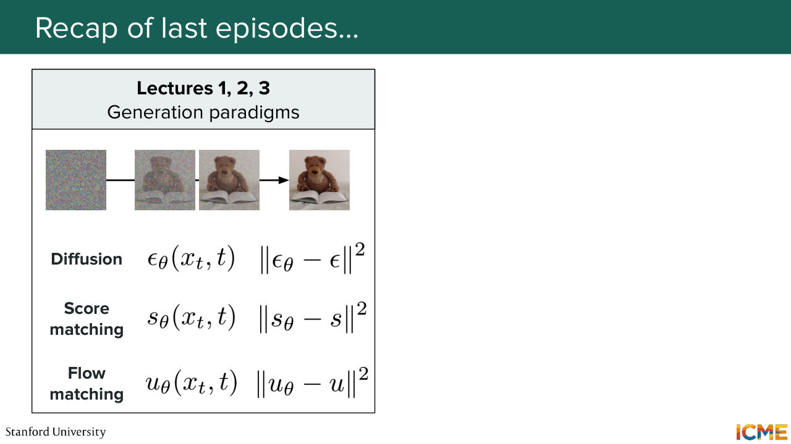
0:18 So we did a lot of hard work during the first half. We derived a tractable loss to learn how to generate images. So if you remember, the first three lectures was us looking from different perspectives
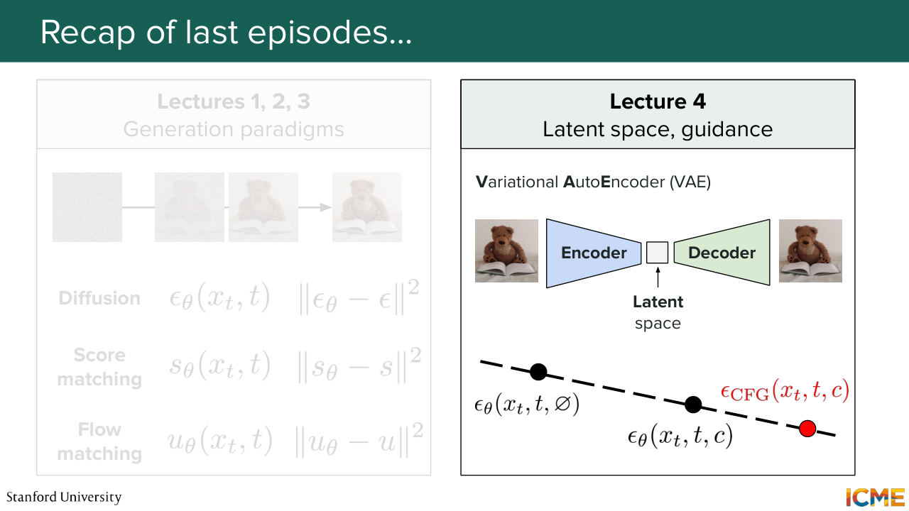
0:34 to derive that loss. And then something else we did, which was, again, hard work, was figuring out in which space those images were living-- so how to represent images. And so this second half is going to be more practical. And this lecture is specifically going to be about the architectures behind the image-generation models.
1:01 So before we start, as usual, we're going to recap what we did the last times. So as I mentioned, the first three lectures were around deriving a tractable training loss to learn how to generate images. So what we want is to be able to generate images like the one that is on the slides. And we saw that a common denominator is us
1:29 starting from those. So we saw three perspectives. The first one was diffusion with DDPM. So we saw that we were corrupting a clean image. And then we were learning how to reconstruct it by predicting the noise that we had to remove. And so we ended up with a loss that was actually quite nice-- L2 loss on the noise. Then in lecture 2, we saw another perspective, which was,
2:02 let's figure out the regions of high density of the data distribution of interest. And what we did was derive a loss that is based on the score. The score here is the gradient of the logarithm of the probability distribution. And then the last one was lecture 3, where we actually said, OK, this problem can actually
2:27 be framed as a transport problem, where we want to go from an initial distribution, which is the noise, to the target one. And here we derive the loss based on the velocity, a.k.a, vector field, which is again, very nice. It can be expressed as an L2 regression loss. And in between, we have this denoising process that is similar in these three paradigms but done differently.
2:58 And then in lecture 4 we said, OK, up until that point, we just assumed that we were able to represent images, the XTs, and we said, OK, actually, let's figure out a good way to represent them in a way that makes sense. And what we said was that we wanted them to be represented in a space that was not
3:24 too high in dimensionality. So there was a space called latent space, in which we want our images to be represented. And we want the representations to be meaningful. So what does meaningful mean? It means having some structure to the space, because what we want is our model to have an easy time learning this generation process.
3:52 And we focused on the VAE, Variational Autoencoder, which was structuring the latent space by having some constraints on how the distribution was behaving over the latent space.
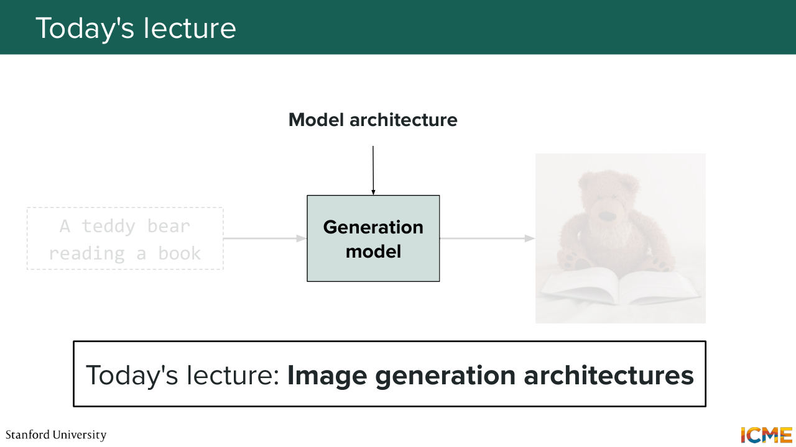
4:10 So we saw this KL divergence term in the loss. But then we said, OK, actually the images were becoming blurry.
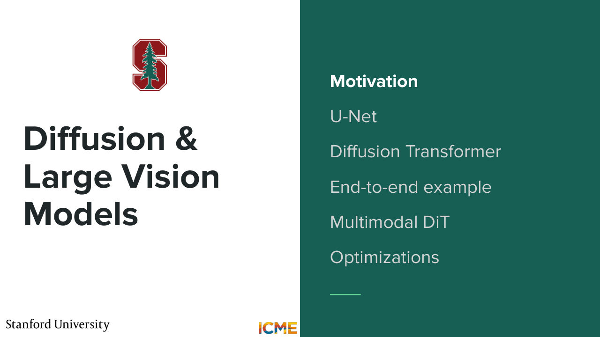
4:18 So then we looked at a number of strategies to combat the blurriness.
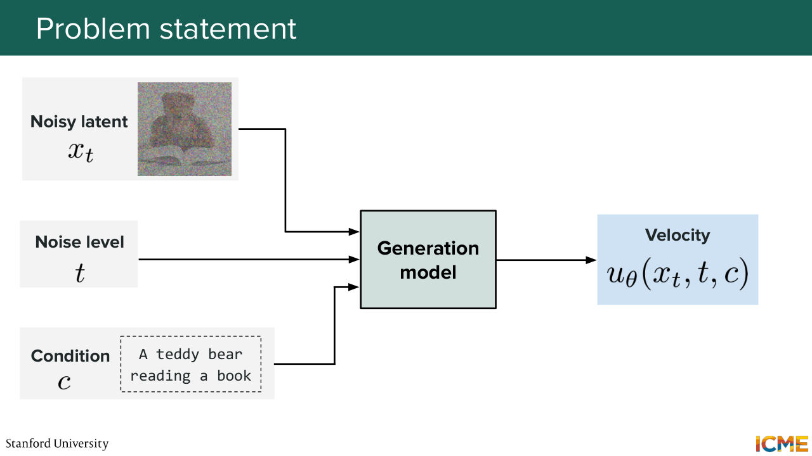
4:23 So we saw the adversarial loss. We saw perceptual loss and so on.
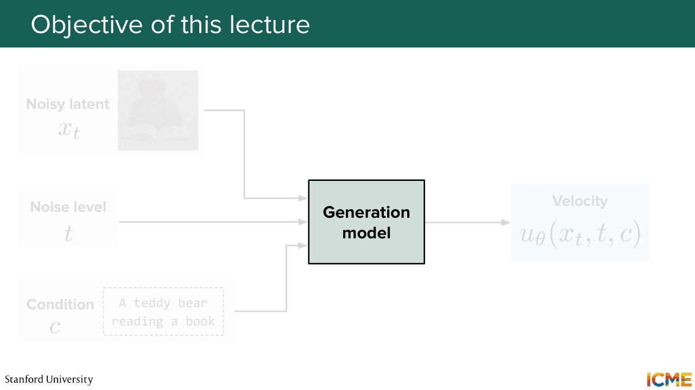
4:29 So we're happy. Now we know how to represent those images. And we saw also that if we were to condition our generation process with the condition, we also had a method called classifier free guidance that allowed us to generate images by emphasizing more on the prompts. And we did that by predicting twice the,
5:01 let's say, noise to remove or velocity or score. And with a guidance factor, emphasize the generation process more towards the prompt. So here this can be represented on the image. And this is where we stopped. And then, of course, we had the midterm.
5:24 And today, what we're going to do is to focus on the architecture behind the image-generation
5:33 model, which until now we considered as being a black box. So I want to give a disclaimer. There are many different architectures. Our goal is not going to just have a catalog of every single one of them. But what I hope this lecture will provide is at least an intuition as to why certain components are
5:59 always being reused. So if you walk away with just an understanding of why things are the way they are, then I think it's going to be a good thing for us. So let's first start by what we want. So what we want, if you remember, diffusion, score matching, flow matching,
6:26 they had a few things as inputs. So first, they had x t-- the noisy image or the noisy latent that you're trying to denoise. You also had some indication of the noise level that's given by time step, t. And you also have a condition. Let's call it C, which it can be a text prompt.
6:56 For instance, if you want to generate an image of a teddy bear reading a book, that can be your condition. So these three elements are your inputs that goes through your generation model. And as an output, you want to predict, let's say, the velocity that will allow you to then iteratively move towards your desired predicted image. And the goal of this whole lecture
7:30 is to focus on that generation model. So that's the model that we're talking about. But before we go into that, I just want to give a few slides notes. So the first one is the condition. So I mentioned it can be a piece of text. In that case, such models are called text to image models, T
7:53 to I. But you can also have a text and an image as input-- so an image editing problem, in which case the model will be called a TI to I model, Text Image to Image Model. So here make this teddy bear dance along with the image of the teddy bear. And then another thing is, of course, the outputs.
8:21 I mentioned there are several ways to parameterize your generation. You can either predict the velocity or, of course, the noise or the score. All of this is roughly the same thing. But just for the sake of consistency, we're just going to say that we're going to predict the velocity just because nowadays most models do that. So with that in mind, what do we want our model to be?
8:55 So first we want our model to be able to understand the global structure of the image that it wants to generate. So that's one. But we also wanted to understand the nuances of the local details so that it can also generate crisp images.
9:18 And of course, we want a model that not only is able to have x t and t as input, but can also condition that based on external signals. And so here it can be input text or input image. And we want, of course, that model to be scalable because of course, nowadays, we're generating images of very high resolution, and we're also generating videos, which we have not
9:44 seen so far, but you can think of this as being also applicable there. So these are our wish lists.
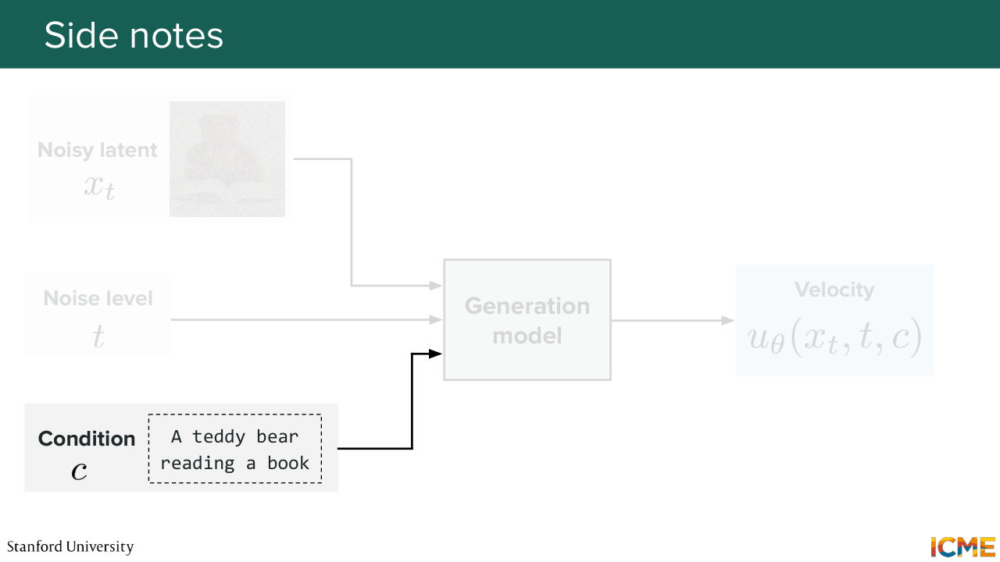
9:57 And let's start with the first model by first thinking about how humans look at an image.
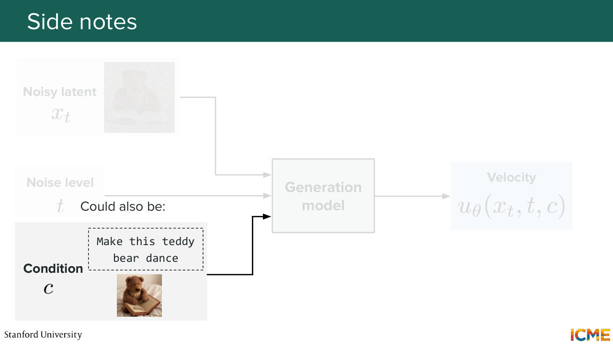
10:08 So you see this teddy bear image. So you have an eye on the right side of the slide.
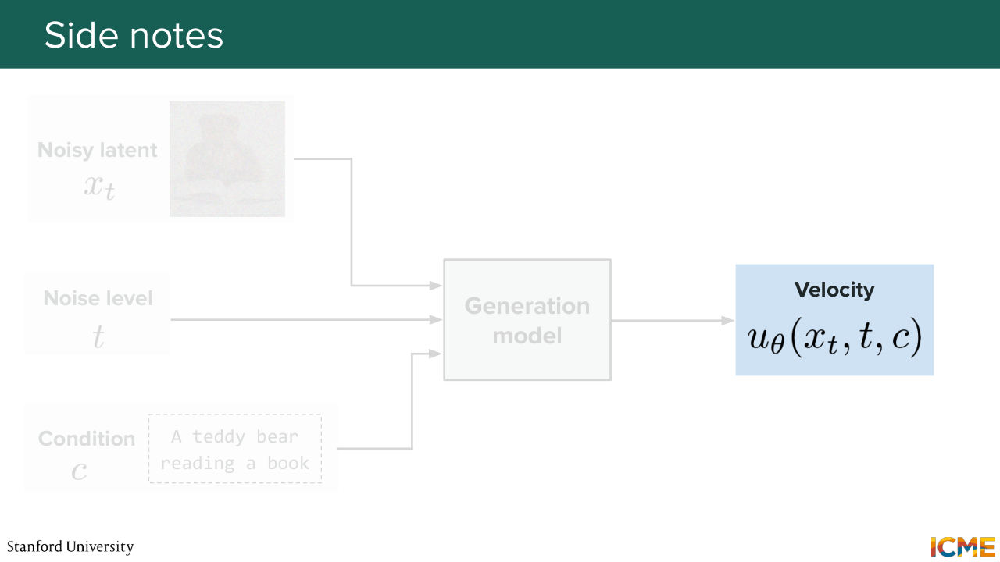
10:14 So when you look at this image, what you're doing is focusing on a specific part of the image
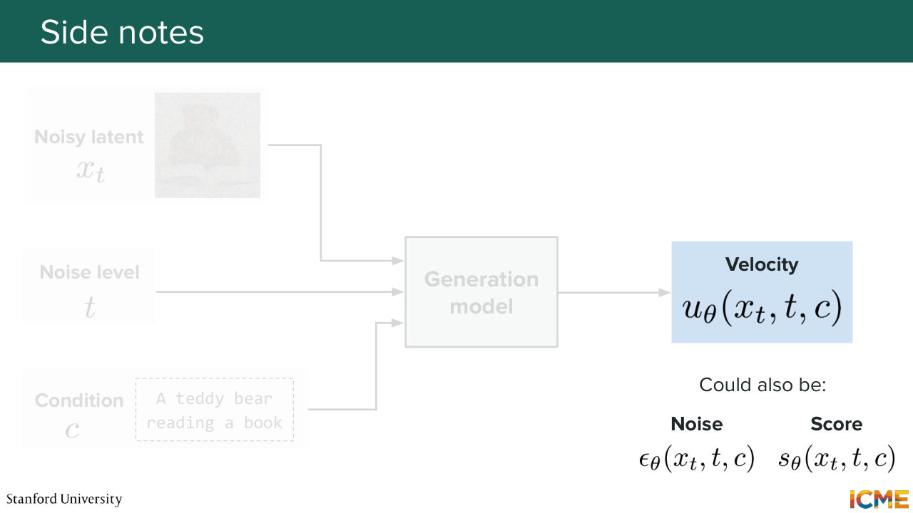
10:22 and skimming through that image, scanning that image.
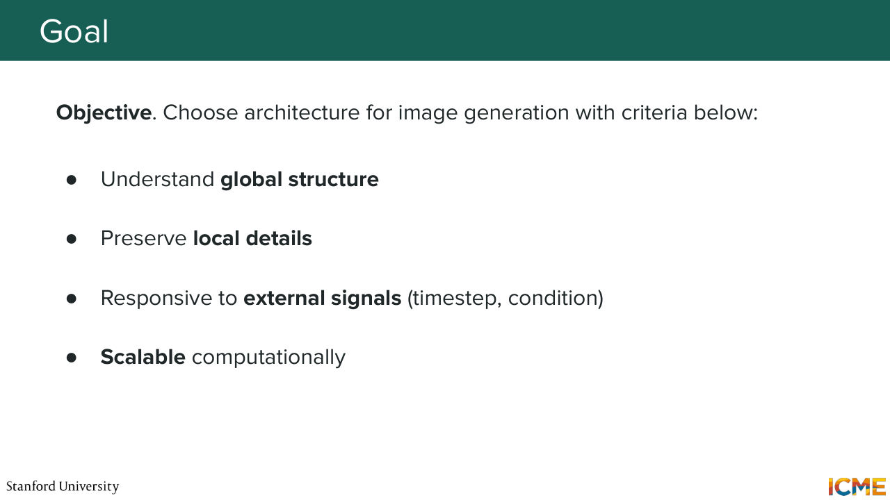
10:27 That's what we do as humans. So one natural way of thinking about how to build such a model
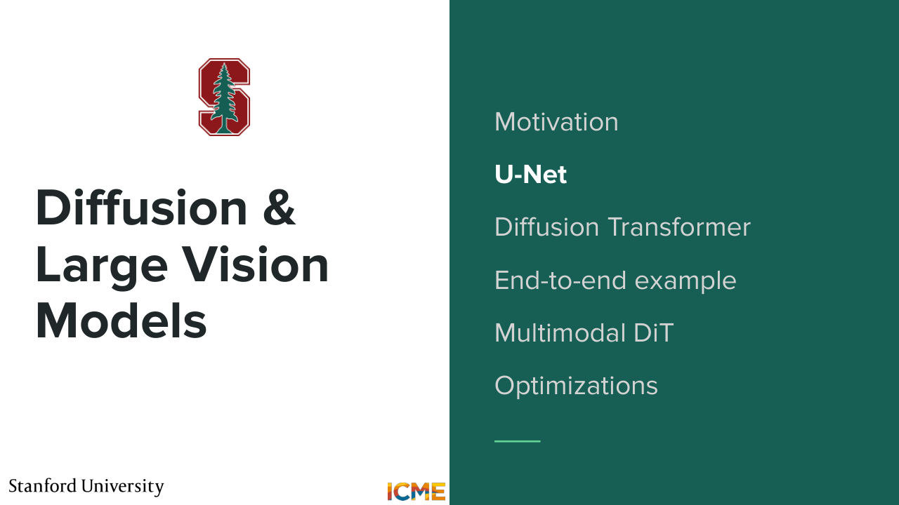
Shown briefly — discussed together with the adjacent slides.
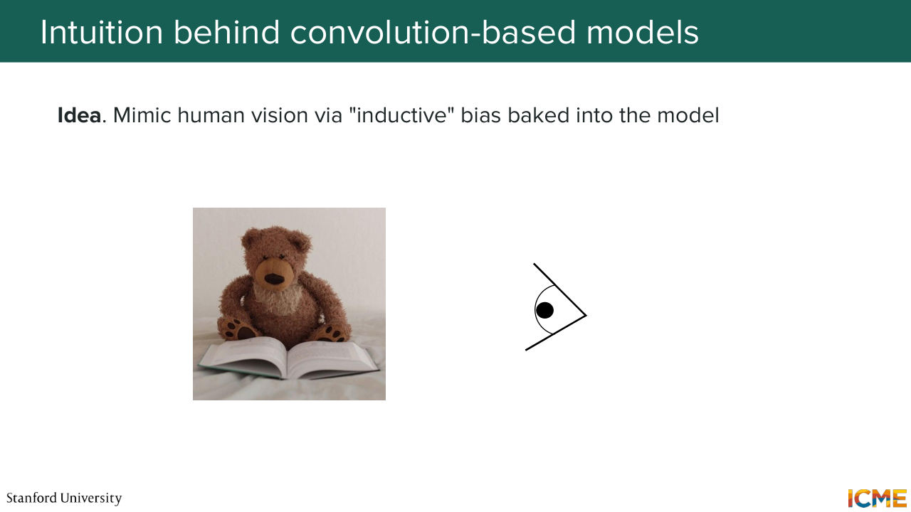
10:39 is to have this bias. I will call it bias, and I will justify it why I say it that way. We want to have our model be biased towards looking at the image in the way we humans look at it. I'm going to call that bias, inductive bias. Who has heard of inductive bias by the way?
11:06 Yeah, a few people. So we say that the model has an inductive bias when we build it in such a way that it behaves in some way that we think it should behave.
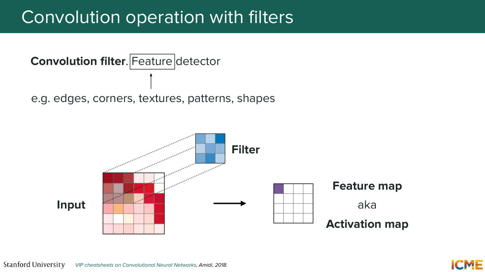
11:21 So in other words, here we're going to say, OK, we want our model to take some image as input, and scan it a little bit like humans do. And that's the reason why I'm going to introduce an operation that maybe you're already familiar with, which is called the convolution operation, which
11:45 takes some inputs, let's say an input image, and then uses a filter to perform convolution operation across that input in order to generate or in order to produce an output. So just on the terminology side, the output is usually called feature map or activation map.
12:15 And here this convolution process typically leads to your output exhibiting things like edges, corners, texture, from your inputs. So it's going to extract features, visual features.
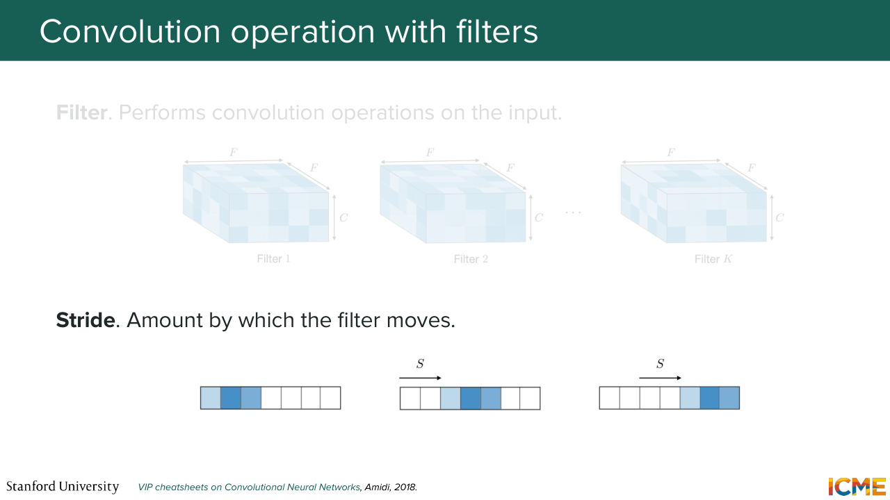
12:35 So another thing that I will note is on this slide, you may think the convolution is done in a 2D manner, but let's remember that images are represented in height, width, but also depth, because you have the three values that represent a pixel. And so the filter is as deep--
13:02 if you want to think of it that way-- as the input. And so the convolution is really across the depth axis as well. So in particular, those filters, they're 3D. They have a dimension of F times F times C, which is the same C as the number of channels from the input. And we typically have K such filters. And then the number of steps by which
13:35 we move the filter is called the stride.
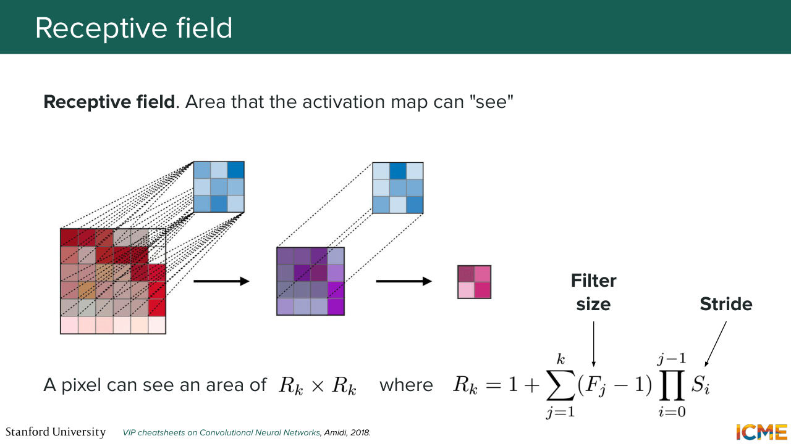
13:41 So that's also a terminology you should have in mind. So based on that, let's remember the conditions we had. We want our image to understand global structure. We want to preserve local details. We want external signals. And we want it to be scalable. Well, with that, at least we have seemingly a tractable way of doing this computation. So let's say that number 4 is good.
14:10 Local details, I think that's also something that is valid here, because you are able to capture patterns within a certain range of, let's say, pixels. So that one is also good. But how about the global structure? You want your output-- so here you want your output to have seen the whole input to be able to be aware of it.
14:44 So there is this concept of a receptive field, which is defined by the area that an activation element is able to see. So here, let's suppose we have an input that has a series of convolutions. So what we're saying is if we take just one
15:07 element from the output, we want to know how many elements from the input it has seen. So this is the receptive field. So there is some formulas there that I don't want us to just remember, but I just want to call out that the area that an element can see is a function of the filter dimension and the strides.
15:37 And if you want the output to have seen all the input, you can imagine that you need a lot of convolutions, because here in this slide, if you do, let's say, just one convolution, then the area is just, let's say, five. So you do two convolutions actually.
16:05 But images, they are typically 500 by 500, 1,000 by 1,000. So you need a lot of such convolutions, which may not be as tractable. So one idea that we can have is to have down-sampling operations that would allow us was to have a bigger receptive field early on so that we can have a global understanding of the structure,
16:37 and then we can have some up-sampling operations to then
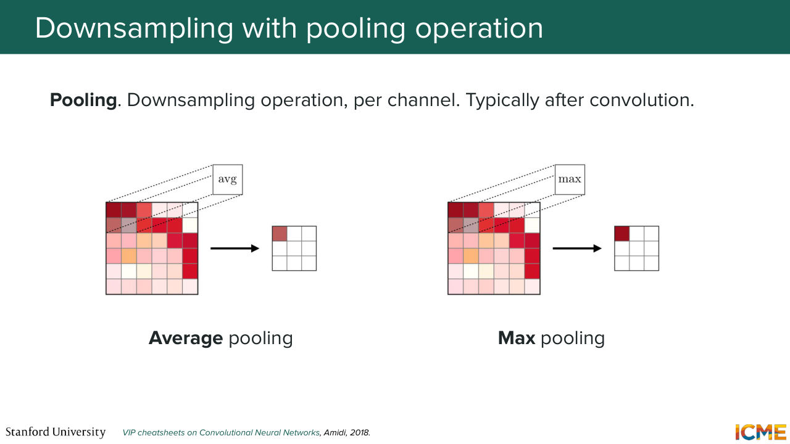
16:43 end up with the same dimensions as the input. That's just an idea I'm throwing out, because let's remember that our model needs to have the inputs X-- so the noisy image as input. And it needs to return something that is as the same dimension as the input as well. So you cannot just reduce the dimension and just call it
17:10 a day. You cannot do that. So for that reason, we're going to see
17:16 a series of operations that are going to help us in building such a model. So here let's see a very common down-sampling operation. So who has heard of pooling here? Pooling? Great. So pooling, as you know, is you take, let's say a given square, and what you do is you just down-sample it by either taking the max value or just the average value.
17:45 So there is no learnable parameters there. And speaking of learnable parameters, I may have been a bit too fast there, but here the filters that are used for convolutional operation, they, of course, are learnable. And you have F times F times C parameters per filter plus some bias term, if you assume that there is bias, times K. Not that I want to go to formulas,
18:17 but just giving you a sense of what is learned and what is not learned. So pooling, you don't learn anything-- just the pooling operation. So this is just down-sampling operations.
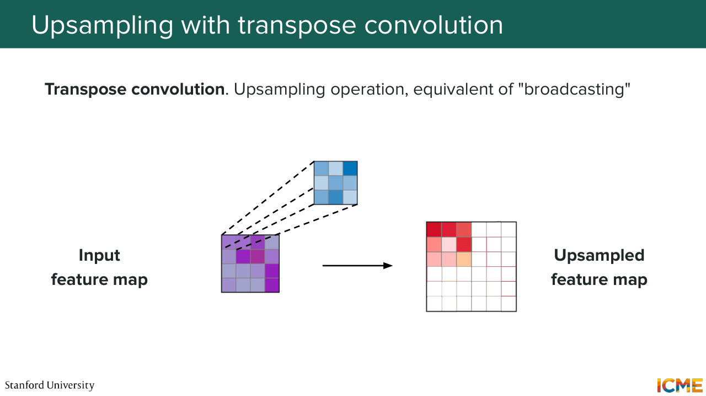
18:31 But I mentioned we want to also be able to up-sample. And there is an operation called the transpose convolution that we're not going to go into too much detail, but I just want to call out that there is an up-sampling operation, that is the transpose convolution that uses filters to broadcast elements from the input towards the output--
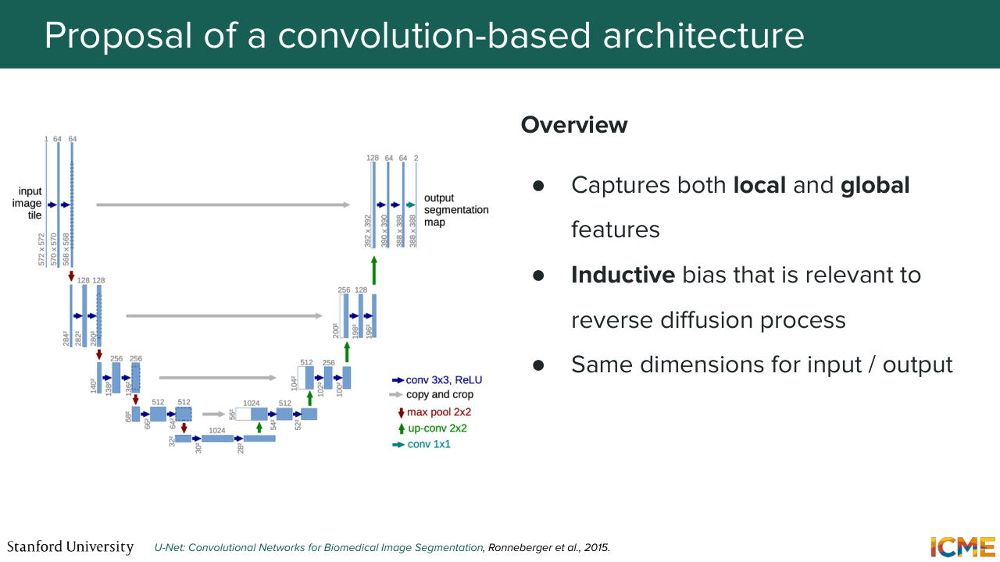
19:02 so just up-samples it. So given that, I hope it's not coming out of the blue, that's
19:16 a model that down-samples the input and then up-samples it could be a natural choice of such a model, because here what you're doing is during the down-sampling step, you're able to have receptive fields of your output that sees most of the inputs, which is the global structure understanding part. And then you have the up-sampling part-- so the one on the right--
19:47 that just increases your output once again back to the dimension that it was just in order for you to have a shape that's abides by what you want.
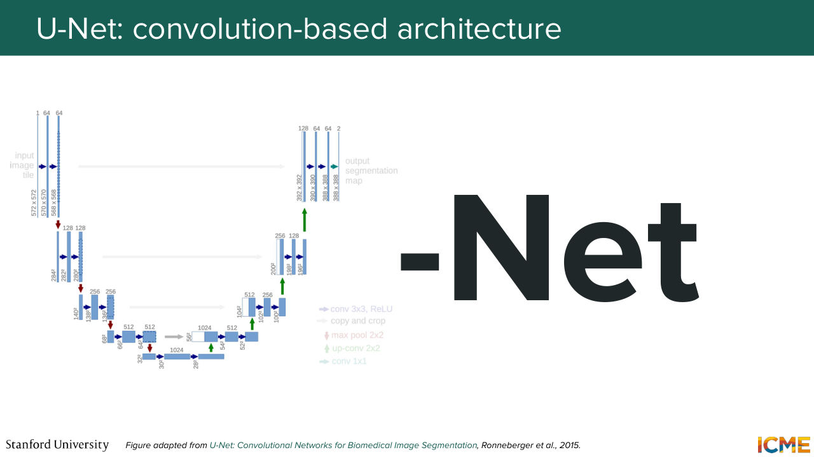
20:02 And here you can also have direct connections from one to the other to just transport some local details that you may have computed. So such a model is called U-Net--
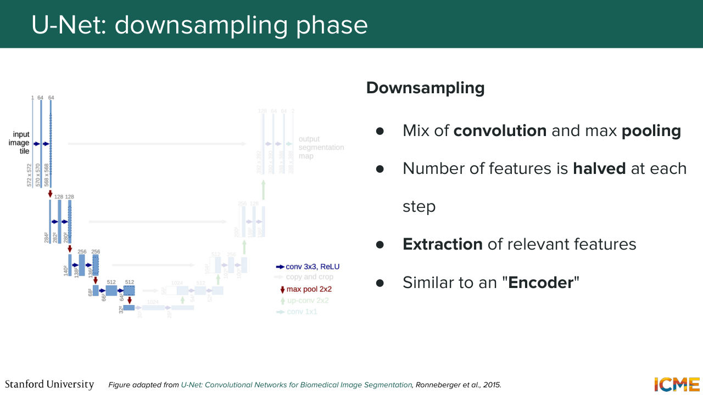
20:24 well, because it's a shape like a U when you do the illustration.
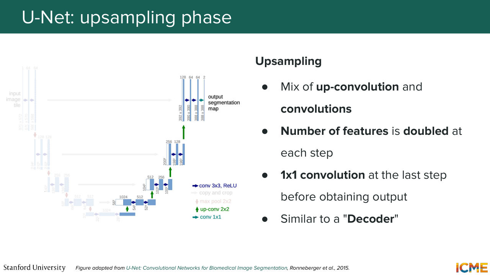
20:29 And so I mentioned a little bit of the intuition. But we're going to go step by step. So the first step is the down-sampling step. So it has a combination of convolutions and pooling that are able to down-sample the dimension of the feature map.
20:54 And as we saw, it just allows your output to have seen more and more of the input. And when I say that, what I mean is if you take a single pixel, a single activation value, it has seen more and more of the input-- a bigger area of the input. So in that sense, what I'm saying is, it is able to understand the global structure of the inputs.
21:21 Is everyone clear on that statement? Cool. So this is similar to an encoder. And then you have the second step, which is the up-sampling part. So you have here a feature map at the very beginning of the up-sampling step, which is very small. And what you want is to up-sample that feature map back to the dimension of the input.
21:51 So here you're using a mix of transpose convolution also called up convolution and convolutions. And you can think of this more as a decoder. So it just leverages the understanding, the global structure understanding that is compressed in the representation at the very bottom, which is called the bottleneck. And it just gets it back to the same dimension as the input.
22:22 But at that step, you may tell me, well, sure, you can have a global understanding of the structure, but you may lose the details. And that's where these connections come into play. So during the down-sampling step, what you want is to leverage the patterns that you're computing in the up-sampling step. So what you're doing is you're taking at each level
22:56 a part of the feature map, and you're just simply copying-- so cropping and copying. So that just allows local details to flow from what you have computed in the down-sampling step to the up-sampling step. Is that part clear? So the question is, what are you copying?
23:23 What are you cropping? So great question. So what you're doing here is the feature map that you're computing in the down-sampling step, you're just literally taking that-- literally doing that-- and then the feature map that is part of the up-sampling step, you're just concatenating those features
23:48 to the features that are in the up-sampling step. So in other words, in the up-sampling procedure, you may have a feature map that you're computing that is let's say of size O times O times C. So what you're saying here is you're concatenating something that is also of size O times O times C, where maybe the C can be different, but you're just concatenating the two.
24:21 So of course, you have some variations of how this is done, but this is what this illustration represents. So the question is, why are you not looking at the down-sampled features? Because we have already lost the details already. So if you see on the slide, we're actually copying and cropping the features that are before we're at that very down-sampled outputs.
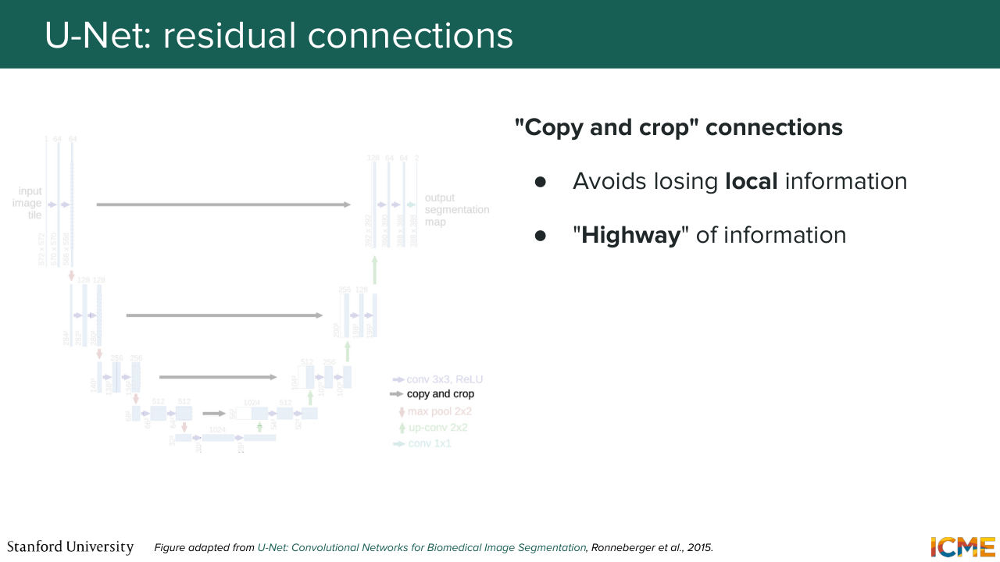
24:49 Because as you go down, you lose more and more details, but then you're gaining global understanding of the inputs. And so that's why you want your connections to go from the very top to the other way and so on. Yeah. So the question is, how we're training this model. So we're training it jointly. So we're not going to go into details there, but let's just assume you can train the whole thing by just
25:17 considering it as just a model. So the question is, can the model output exactly what the input image? So that is not what you want because-- so I think you're maybe remembering the autoencoder that we saw last time. So the goal of the autoencoder is to learn a representation of the inputs and compress it into in a latent space so that you
25:45 can sample from the latent space and then reconstruct it. And the problem here is you have the connections that come from the thing that you're not supposed to have. So you can think of this model as taking a noisy latent
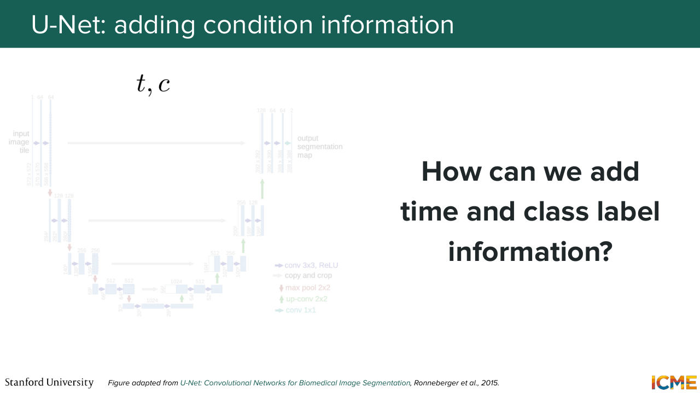
26:01 as input. But your goal is to not reconstruct that output, it's actually to predict the thing that will allow you to denoise it. So in that sense, there are some similarities with an autoencoder, but it's very different. Yep. So the question is, does the output of the model have to be equal to the dimensions of the input?
26:26 Yes. Because so the question is, why? Well if you take your input latent x t, so if you remember back in lecture 3, which was like two or three weeks ago, we had the iterative step, which was, sorry xt plus dt is equal to xt plus the velocity times dt. So if you just look at that equation, you just see that the dimensions need to match.
27:01 Another way to think about it is in the diffusion with the DPM formulation. What you want is to find the noise to remove, and that noise needs to match your input image. Exactly, exactly. OK, perfect. I have a lot of content. So we'll try to move a little bit faster,
27:27 but I try to also do some pauses here and there to make sure we're still together now. So you have that model. But now you may wonder, well, how can you add external conditions? How can you inform your model that you're at time step t? How can you inform your model that you want to condition it with respect to some condition?
27:50 Well, that's a great question. And so to answer that question, you first
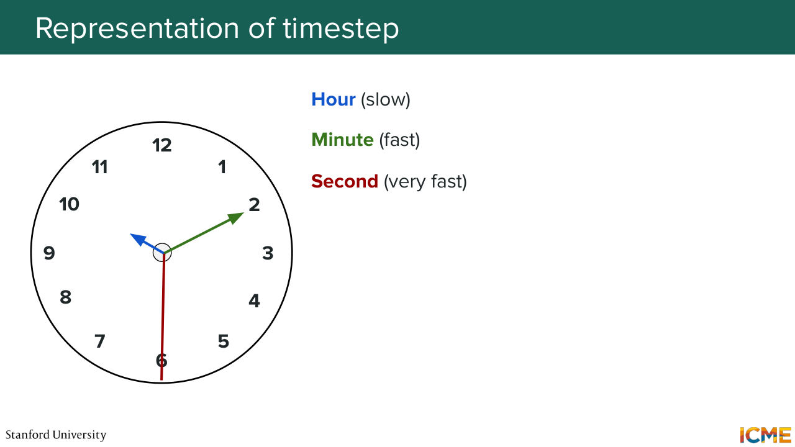
27:56 need to think about how you want to represent your time step t and your condition C. Well, let's start with the time step. Here the goal is to represent the time step in a D dimensional space. And before I tell you how we do it, I just want you to look at your watch. Well, as humans, we construct time
28:28 as a function of different dimensions-- hours, minutes, seconds, days, and so on and so forth. And you can think of each of these dimensions as being part of a vector if you think about it. And one thing that's quite interesting about these dimensions is that they run at different frequencies. So for instance, an hour is kind of slow to pass.
28:59 So I hope, by the way, this lecture is fun so you're not feeling like an hour is low, but hour is slow. Minute is faster. Seconds are even faster. So you have a difference in frequencies, a difference in frequencies, which hopefully motivates
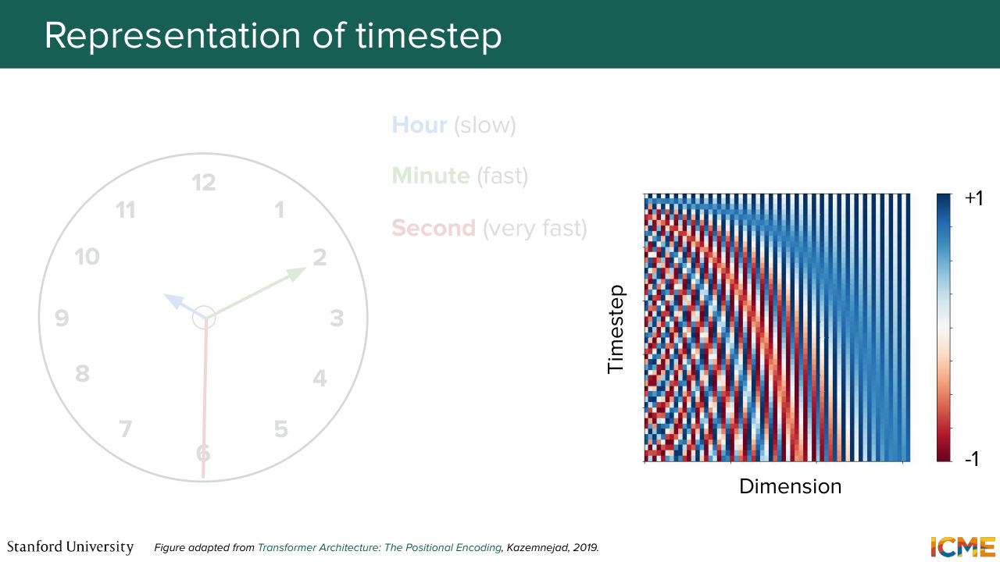
29:17 the fact that what we want is to represent these time steps as vectors of quantities that are also sinusoidal-- so things that have some frequency to it-- where some dimensions are, let's say, slower than others. So is that motivating example intuitive enough for this
29:46 to be making sense? So in other words, let me tell you what that illustration represents. If you take a single row, then what you have is an illustration of the values of each dimension. So what that means is, for instance, at the very bottom, or let's start at the very top, let's say.
30:11 You have values that alternate between let's say 1 and 0 in this example. And then as you move down, you see that some dimensions they vary faster than others. And this is exactly matching the intuition I mentioned. So that is for the time step. Now the condition.
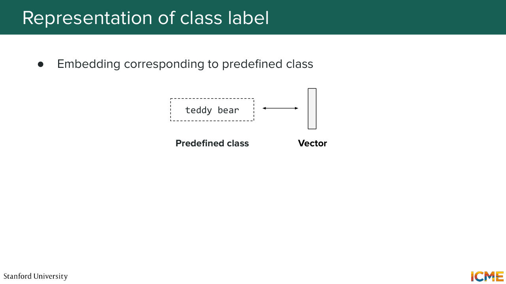
30:34 So I mentioned a condition can be a piece of text. Well, you have a number of ways to represent that text. We've seen some methods in the past lecture in terms of how to represent text and image. But here, I'll just mention just a few categories of methods. So there's one where you have very basic predefined class. And what you're doing is you're just learning the vector representation of that class.
31:05 Or you can go more granular and divide your input text into tokens and then have representation
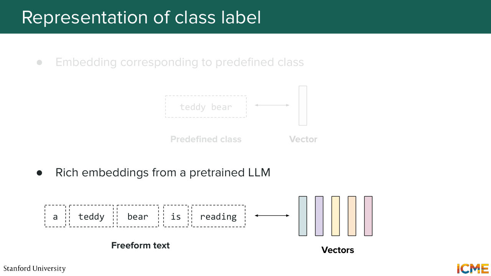
31:12 for each of these tokens. So for both these categories of methods, you have a bunch of such methods. But one very common method these days is just to get a pre-trained LLM, and just grab the embeddings, which we will not go into details here but what people do nowadays. And then for the first method, we can simply take a VIT-based model
31:39 and just take the representation of the CLS token, which I believe we briefly saw in the last lecture. All of that to say that we have ways to represent the condition. Cool. So let's suppose we have a representation of the time step. We have a representation of the condition. Now, how do you inject it in your model? Well, here again, you have a number of methods.
32:11 There is no consensus. One is injecting that to the feature map. So here what I mean is you take your vector t, you take your vector c, let's say you add them, and then you make sure that the dimension of your vector is, let's say, c the number of channels. And then what you do is you add it to your feature map, which if you remember is of depth c.
32:41 So that can be one way. Another way is to modulate that feature. And that part we will see that in about 20 minutes. So just wait for that. And then the third one is you do some cross attention operation there, which we're going to see as well, maybe in 40 minutes. So all of that to say that there are a number of ways
33:10 to inject TNC, and there is not like a standard way that people do it. So this is just a way for me to tell you there are several methods. So in terms of timeline, we're in 2026.
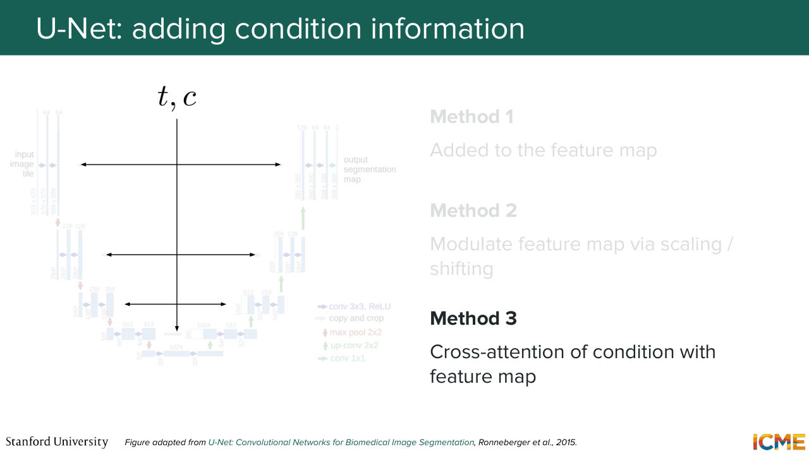
Shown briefly — discussed together with the adjacent slides.
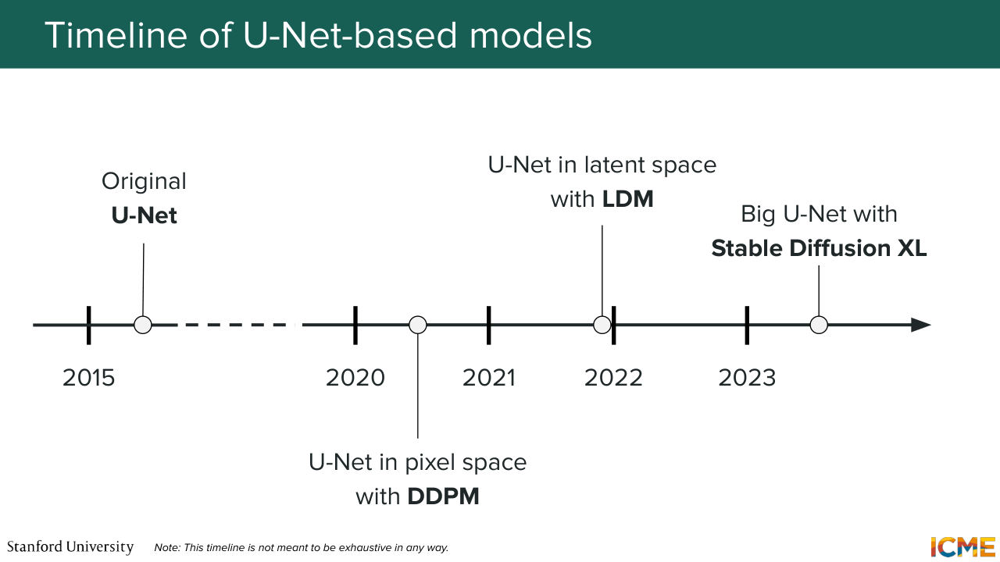
33:27 So just giving you a sense of when these models were published when these were used. So in 2015, the U-Net paper came out in the context of image segmentation for, I believe, medical images. But it is something that has not been widely in use in the image generation field up until the early 2020s. So for instance, you have the DDPM paper,
33:57 which if you remember, we focused on during lecture one that actually used U-Net as an architecture. And then another thing that's quite noteworthy is latent diffusion model, which was a paper that introduced or that popularized the fact of generating images in the latent space, also used some form of the U-Net.
34:25 And then we also had a U-Net that was quite scaled in a very big way in Stable Diffusion, Excel, which was published in 2023. So if you look at that timeline and if you look at my explanations, you may think, well, that's great.
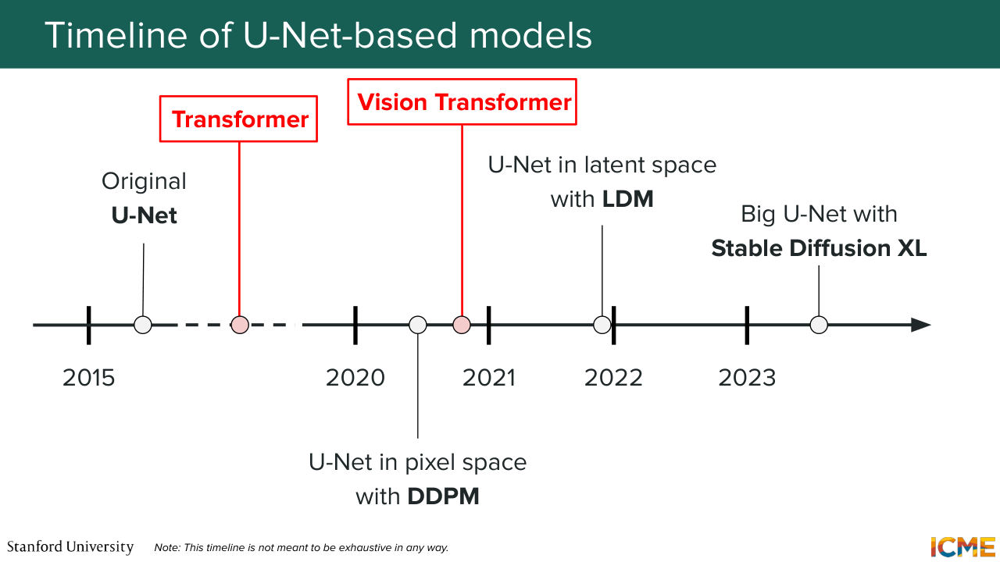
34:47 We have everything. Let's stop here. We have our model. Well, not so fast, because in 2017 and in 2020, there are papers that were landmark papers that really revolutionize, for instance, transformer revolutionized the NLP field? And one question you may wonder is, well, they're
35:14 performing so well there. What about here? What about us? And that's what the vision transformer did in the image understanding space, which took a backbone of the transformer and applied it in the image-understanding case and saw great results. And so now you may wonder, OK, but can we do the same
35:41 for image-generation? And that's what we're going to see now.
35:48 But before we do that, I told you I will try to not give you things out of the blue.
35:54 I'll try to build some intuition. And here, one thing I want to try to tell you is, why would such a model be beneficial for us? Because we have the global structure understanding. We have the local details preserving. We have everything. Why would we need that? Well, imagine if you want to generate an image of a teddy bear next to a mirror.
36:22 Well, what happens is in your image, what you need is for the low level texture to be very similar in one part of the image and in a very different part of that same image. So the problem with the U-Net is you have convolutions that are localized to in the neighborhood in the vicinity of pixels.
36:53 But as you go further from that pixel, you have a bunch of information that gets mixed in whatever you compute. So you don't have almost pixel to pixel or patches of pixel to patches of pixel interaction. So you're not able to cleanly capture or to cleanly have an understanding of a local detail in one part of the image and local detail in another part of the image.
37:24 And so this is a kind of example that the U-Net may actually fail. And so for that reason, the transformer is actually a great model for that because--
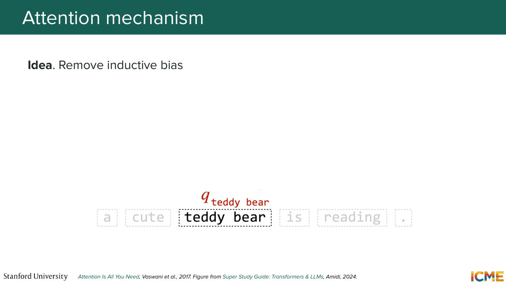
37:38 yeah, exactly. So the transformer is based on the concept of attention, which was initially introduced for texts. I'm going to briefly mention it here, but the idea for text was you want to compute representations of your words as a function of all other words. So what you want is to have direct links from one word
38:08 to another word, regardless of the distance. So what you have is a concept of queries, keys, and values. So what you're wondering is, if you have a query, if you have a text, you want to know how relevant or how similar all the other pieces of text, a.k.a tokens are. So you want to see how the query relates two keys.
38:40 And then once you how relevant they are, so you take some separation of the two-- so let's say dot product that's normalized in a good way. And then you can take the associated value. So that's the attention mechanism or the self-attention mechanism that is aimed at removing the inductive bias. And here we can actually use that same mechanism for images.
39:07 So you can think that you take pieces of your image and you're doing the same thing. So you say, OK, a given a set piece of image, what are the other pieces of the same image that are relevant to that one? So it's the same mechanism.
39:33 So what I told you also happens to be very nicely represented
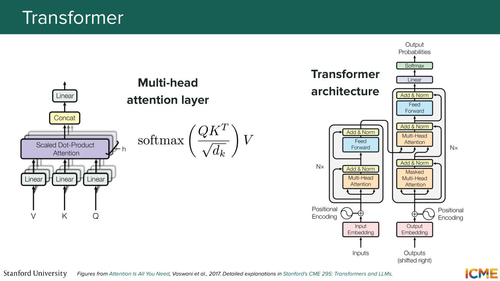
39:39 mathematically-- so very tractable computationally with the hardware that we have today. So you may have seen the formula softmax of Q times K transpose over some normalization normalizing constant times V. So that is the self-attention operation just in matrix form. And on the right side of the slide, you have just the transformer architecture
40:04 as it was initially introduced in the context of I believe it was translation-- so for instance,
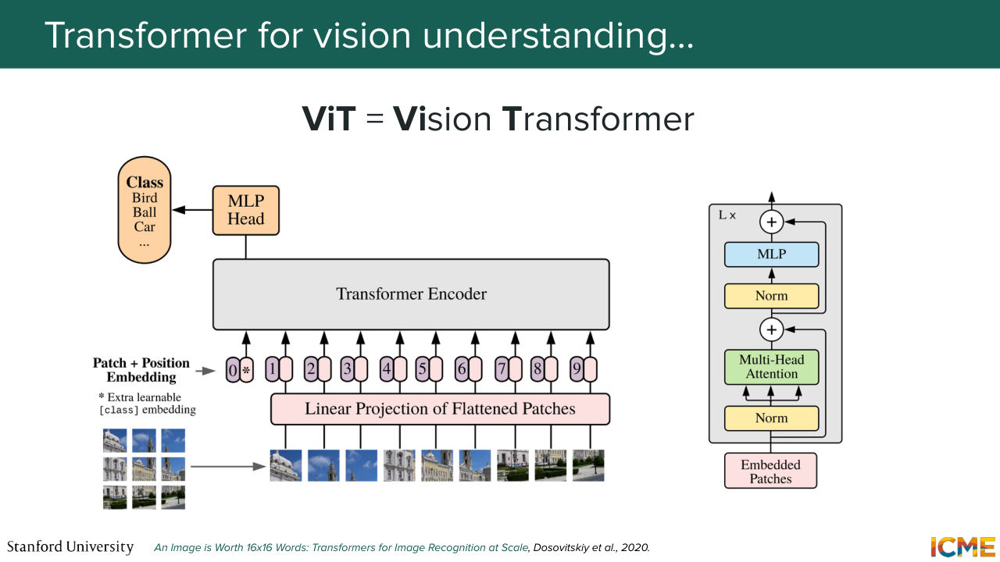
40:11 English to French translation. So you had two parts-- one on the left side, which is called the encoder, which computes rich embeddings of your input, and the right side is the decoder that allows you to do translation one at a time, by allowing each of your output to interact to output that you decoded so far, to interact with the whole input.
40:39 So four images. We're not translating anything, we're just processing pieces of images. So we're only going to borrow the encoder part of the transformer-- so the left part. And that's what we saw the vision transformer did. So it took just the encoder part of the transformer, and it took an image as an input,
41:11 and it did something very special to that image as a pre-processing step. So what it did was cut it into patches, and then consider these patches as tokens in the same way it is done for words, and then process them again with the self-attention mechanism, allowing each patch of image to interact with all other ones
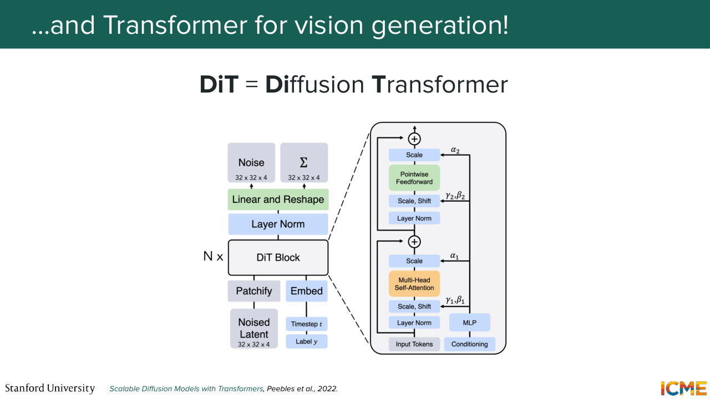
41:39 to just figure out which ones are actually relevant. So this was the DiT. And let me introduce you to the vision generation equivalent, the diffusion transformer, which it was introduced in 2022, which is also relying on the self-attention mechanism. And we're going to see exactly how. But the idea is very similar.
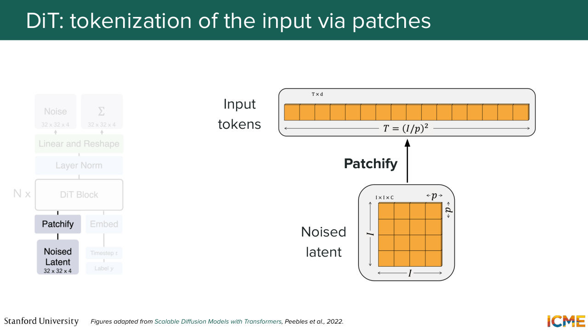
42:10 You take a noisy latent as input, and what you do is-- so remember the wish list that we had. We want to understand global structure. We want to preserve local details and so on and so forth. So here what we're saying is we're just allowing all patches to interact with one another. Does that make sense so far?
42:39 It's not out of the blue that I brought up this model. No. All good? Perfect. So let's go step by step into what each component means here. So you have on the illustration, a patchy file operation, that takes in your noised latent and that divides it into patches.
43:07 So you have let's say, I times I times C tensor that you divide into P times P times C patches. And those patches you just want to consider them as tokens. And you end up with an input length of I over P squared. So the smaller your patches, the higher
43:33 or the longer your sequence, which also matches your intuition.
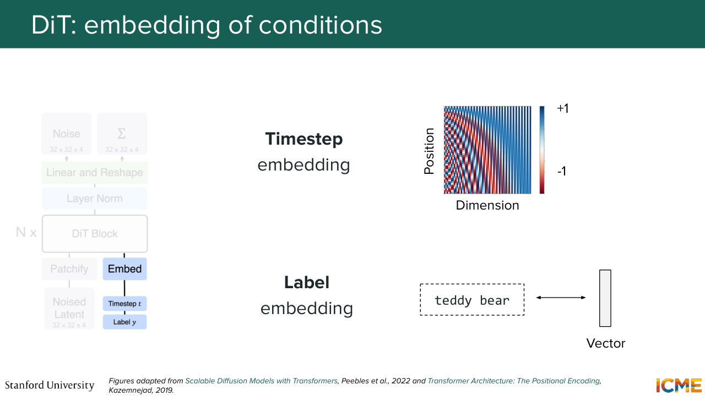
43:42 So in that sense, you can also tell from this step that there is a trade off between how granular you want to be and how much computation you want to compute. So that's for that. And then the second step is to actually inject your conditions-- so the external signals, the time step, and then the input text, let's say. So here what we do is we take our timestep embedding, which
44:13 as we saw can be a series of sinusoidal functions that you have in a vector, and then your condition that can be just an embedding. So I believe in the DiT paper, they just consider the embedding of the whole text-- so just one vector for the whole text. So let's suppose you have these two quantities.
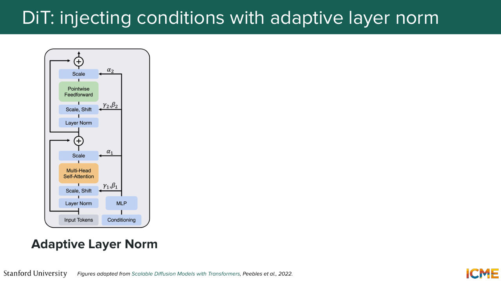
44:38 Now the question is, how do you inject that into your model? So the paper went through different methods. But there was one that stood out. So what we're going to do is for me to just tell you what methods they tried out and then focus on the one that performed the best. So the first method was called adaptive layer norm,
45:06 which consisted of taking the external signals
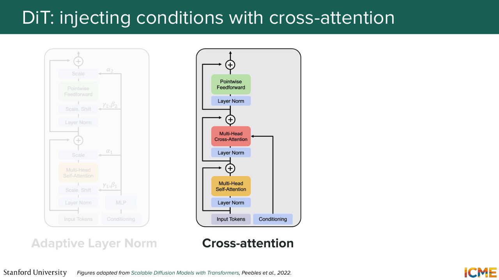
45:11 and then modulating the tokens. So do you remember when I told you modulating in the U-Net? So that's the same modulating modulation I'm talking about. So that's the first method. The second method is to say, OK, you have your external signals. What you can do is to have an extra step in your transformer block, where what you do is letting the tokens representing
45:42 the image latents interact with the time step interacts with the label embedding via cross-attention. So here you can think of it as you have queries which are your noise latents. And you're wondering which ones of your conditions are relevant for your noise patch.
46:09 And then you do a query times key, let's say a dot product of those, and then you multiply by value. So you express your noise latents
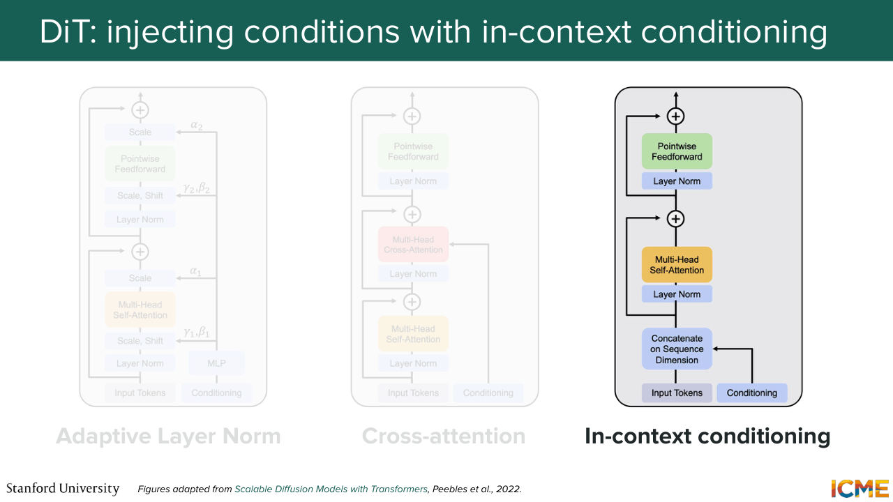
46:21 as a function of your conditions. So this can be a second option.
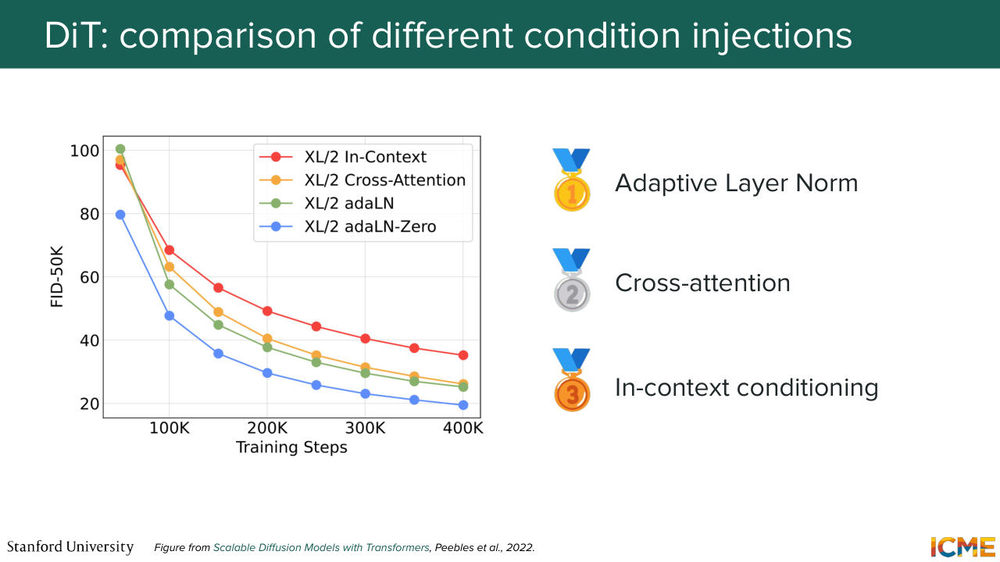
46:27 And the third option is to just say, OK, actually we're going to take these vectors,
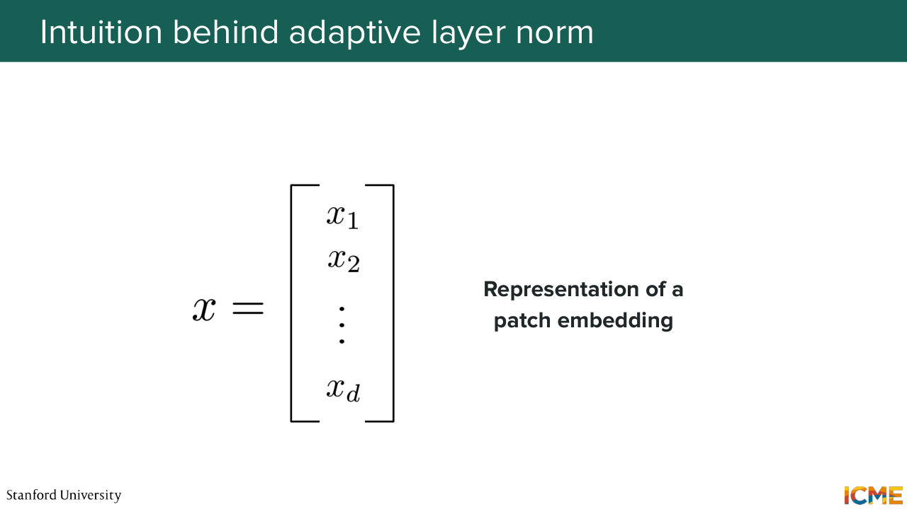
46:34 and we're just going to concatenate that in the input sequence. Very easy. Well, it turns out that after they did all these experiments, they saw that the adaptive layer norm was the most performant. I'm going to give you a preview of what we're going to see in lecture 7, which is how to quantify how good an image is. So there is a metric called the Fréchet Inception Distance,
47:05 the FID, which is the one that is represented here where the lower that metric, the better it is. And what you see here is when you use adaptive layer norm, you get the bottom curve that allows you to get better quality image quality compared to the other ones as a function of how far you are in the training process.
47:35 So if you saw, there's actually two versions of the adaptive layer norm. There is adaptive layer norm, and there's adaptive layer norm 0. I'm going to tell you what that 0 is about. But let's focus on adaptive layer norm. So I could very well just give you the formula and tell you that it is adaptive layer norm. But I think it's very convenient to just build
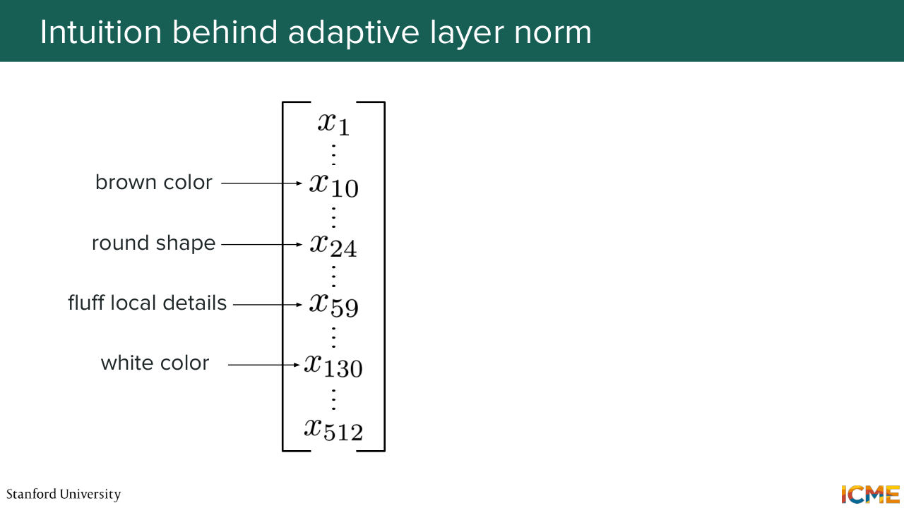
48:03 an intuition as to why it may make sense. So I'm going to use an example for that.
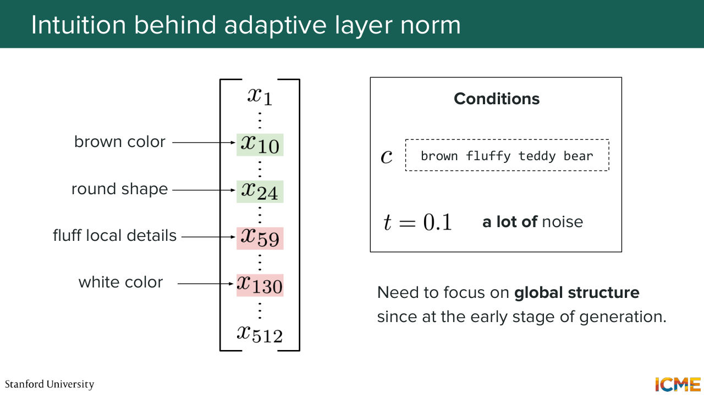
Shown briefly — discussed together with the adjacent slides.
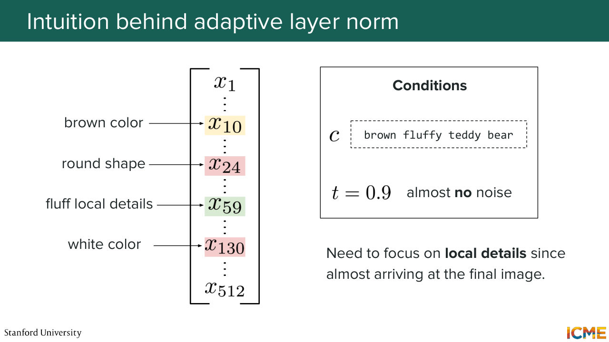
Shown briefly — discussed together with the adjacent slides.
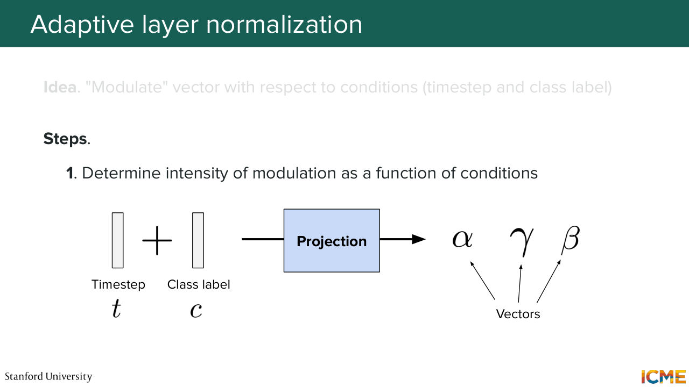
48:13 So I mentioned each patch can be represented by a vector.
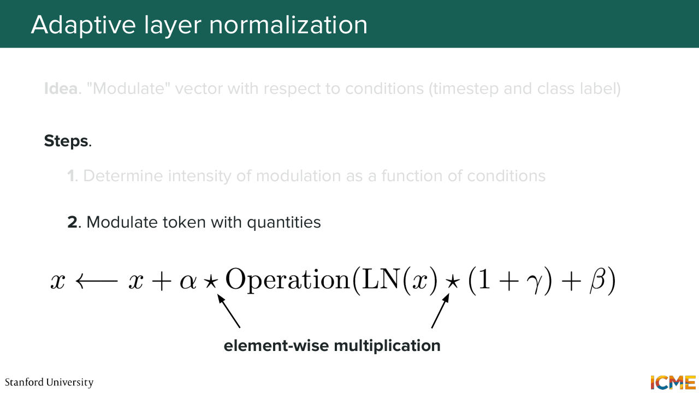
48:20 Let's assume that we can interpret this vector
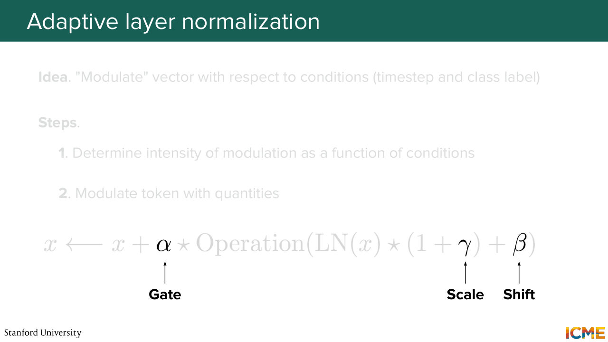
48:27 and say that let's say a dimension is responsible for something and another one for something else, which may not be true. But for the sake of this example, let's suppose it is true. So remember, we are in the latent space, and we can have some semantic interpretation of the dimensions. So there is some truth to what I'm saying. But let's suppose you have a vector where let's say the 10th
48:53 dimension represents the intensity of, let's say, the brown color. Let's say dimension 24 is how round the shape is. Dimension 59 is how fluffy the local details are and then dimension 130, which is how white the color is. So let's suppose you have such dimensions. And now let's suppose you want to generate
49:23 an image with the condition, a brown fluffy teddy bear. So you want to generate that image. And as you remember, generating an image is not one shot. Typically you do that iteratively where you take a noisy latent as inputs. And then you have the condition. You have how noisy that image is, and you try to have something as output that will allow
49:48 you to denoise your image. And let's suppose that we're at a stage where there is a lot of noise. So, the noise can be represented on a scale that's here we're going to assume is between 0 and 1, where 0 is super noisy. 1 is clean. And let's assume that time here is 0.1-- so a lot of noise.
50:14 So here what you would want is to focus on-- so at that stage of the generation, you want to focus on surfacing the global structure of the image because it's still super noisy. You're just trying to sketch what the final image is. So here you want some brownness in the image. You want some round shapes that may represent
50:40 your teddy bear and so on. So you want these features to surface. So our intuition tells us that you want these dimensions to have a higher intensity. In contrast to that, you don't want to have local details just yet because it's very noisy. So that's not the time. And then you don't want any white color because your teddy bear is brown. It's not white.
51:08 Now let's suppose you have the same condition as inputs, but now you're at a more advanced stage in your generation process. Now t equals 0.9, which corresponds to almost no noise in your input image. So here you may wonder, OK, so now the input is already quite figured out in terms of global structure. Now I need to focus on the details.
51:38 So you want the, let's say fluffy details, to have a higher intensity. And you don't want the round shape to be that intense because it's already there. And the brown color is same. It's already there and then white color again. You don't want it. So what I just told you is how we
52:03 would like different dimensions of the patch embedding to have their intensity modulated as a function of the condition, which is, for instance, the input text and the noise level in which you are. So in that sense, what you want is for your patch embedding
52:33 to exhibit higher intensities in the dimensions you care and lower intensity in the dimensions you don't care. So in that sense, what I propose is how about we modulate these tokens? How about we modulate these vectors? So here what we would do is to take the condition to take the time step as input and to obtain some vectors.
53:05 So let's call them alpha, gamma, and beta. So let's assume we obtain these vectors that are a function of the condition and the noise level. And what we want to do is to modulate the embedding of the patch. So how would we do that? Well, you take your vector.
53:29 You do some normalization just because it's not part of the modulation procedure, but it's just good because it just improves your training stability. So let's suppose you normalize your vector. And you do an element-wise multiplication with 1 plus gamma. So if gamma is equal to the vector 0, the element-wise multiplication of this and one
53:59 is completely [INAUDIBLE] and nothing changes. But if gamma is a vector that tells you that, OK, a given dimension should be higher and another dimension should be lower, then it will scale your x. And by the way, I said 1, but it's the vector 1. So you can think of it as a vector matching the dimension
54:28 of gamma of just filled with 1. So in that sense, you can think of gamma as being a scale coefficient, a scale vector because it scales x. Then you can add beta, which is a bias, and perform some operation, and have an element-wise multiplication of this whole quantity
54:58 with alpha. And alpha will be your gate. Because what you do is you take your x. You flow the same x. And what you do is you make some operation with that x, and you scale it. You shift it, and you gate it with alpha. And alpha is there to tell you how much of that
55:25 change is going to flow in your embedding. So in that sense, I'm just going to, again, stress that these stars are element-wise multiplications. And alpha, gamma, and beta have very specific roles. So alpha really gate keeps this whole quantity from being injected. Gamma is responsible for scaling the quantity.
55:54 And then beta is there to shift it because it's a plus with that quantity. And do you remember I told you I'm going to say what adaptive layer norm 0 is? Do you remember in the chart? Well, adaptive layer norm 0 is adaptive layer norm where when you start training, you initialize your gates to 0, such that there is no modification.
56:29 So by the way you, you set alpha and gamma and beta to 0, I believe in most implementations, but alpha being to 0 already guarantees that at the very beginning of training, you-- yeah. So the question is unconditional. Yes. So at the very beginning, you don't have any impact from the condition on your embedding. So far so good?
56:58 So we will have a detailed example after that. So I hope it will be also clearer there. But that is the high level intuition behind why adaptive LayerNorm is useful. It is there to highlight dimensions that are important for the task at hand. And so here what we do is-- so just recapping what we said.
57:28 We take our condition. So it's the time step. It's the class label-- so t and c. We add them together, and then we use just a multi-layer perceptron, which is just a linear projection, some activation, and another linear projection, to obtain this gate, scale, and shift alpha, gamma and beta, that are then used to modulate the patch embeddings.
57:58 So the question is, is t corresponding to the diffusion time step? Yes. So it's how noisy you are in your generation process. So one example is in the very, very beginning. If let's say, your input is super noisy, then t is going to be very close to 0, for instance. But you will represent that by your vector that is composed of sinusoidal functions. Yeah, that's right. So the question is, is this a reverse process?
58:27 Well, actually even during training, you would just inject the t that corresponds to the noise level of your image. So we're going to see exactly an example of this. So I'll actually answer your question in great detail in a second. Perfect. Well, with that, what I propose is we wrap up this,
58:51 and I walk you through an end to end example of what that looks like. So your patch embeddings, you run them through your diffusion transformer blocks. There can be several of them. And at the very end, you obtain encoded tokens-- so patch-embedding tokens that are aware of one another because they went through all these operations. And remember what we want is to have an output that is of the same shape as the input.
59:23 And so here the step is to reshape that output in the shape that matters to you. Well, the authors of DiT applied this to the DDP end use case, and they actually assumed that they were not just predicting the mean but also the covariance matrix. So that's not very common by the way. So you would more predict the mean but not both.
59:53 But I'm saying this because that just explains why there are two outputs. But in our case, we would just have one output-- in our case, the velocity, which should be in the same shape as the input. And what the authors saw was that if you take the DiT
1:00:18 architecture and if you scale it in terms of number of parameters, then you get better and better results. And they scaled it in terms of number of parameters, but they also scaled it in terms of how granular the patches were, because the patches they have dimension p times p times c. And if you take big patches, then you have a much coarser
1:00:50 view than let's say, a small patch, small p. The problem with the number of parameters is it does not convey that dimension. So you can have the same number of parameters but vary p, which is why the authors also use FLOPs. So who has heard of FLOPs before? Floating Point Operations is just
1:01:16 a measure of how many operations you're doing in your forward pass. And that actually includes patch size, because if you remember, your input has a length of I over P squared. So if you have a smaller p, you have a bigger sequence, which is reflected in your flops measure. And in particular, so that's pretty interesting.
1:01:42 So you should not only scale one and not the other. So they see that if they scale the transformer size, they get better results but not great. Now, if they only scale the patch size, they get better results but not great. But if they scale both the transformer size and the patch size, then they get amazing results.
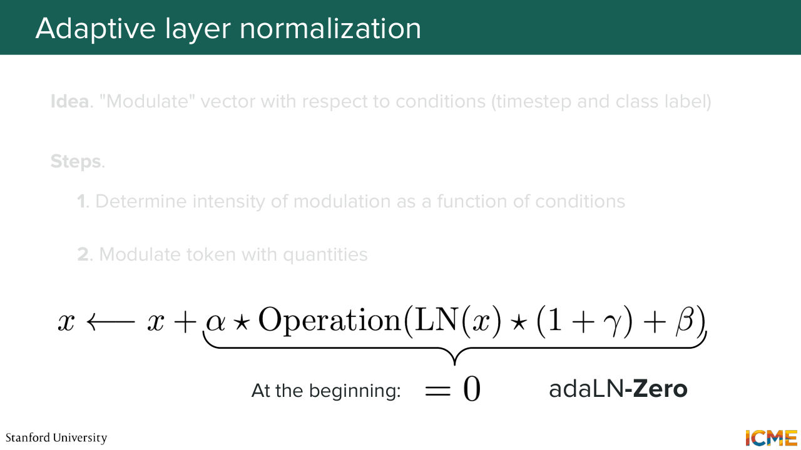
1:02:11 That's what you see in the figure on the right and also the chart that tells you this as a function of FID, which as I mentioned, is a metric we will see in two lectures, where the lower the value, the better it is.
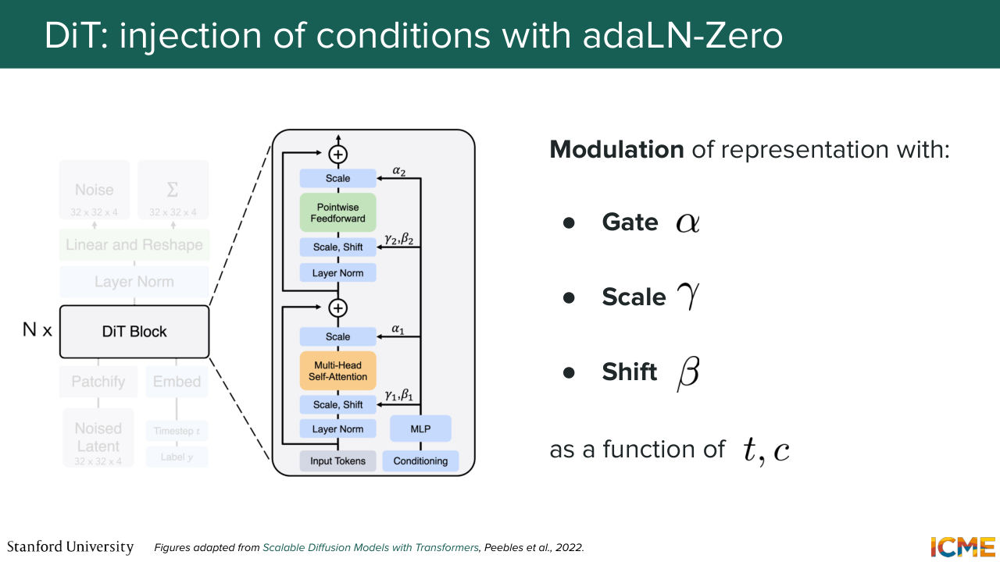
Shown briefly — discussed together with the adjacent slides.
Shown briefly — discussed together with the adjacent slides.
Shown briefly — discussed together with the adjacent slides.
Shown briefly — discussed together with the adjacent slides.
Shown briefly — discussed together with the adjacent slides.
1:02:29 And that was the DiT. Given that the DiT is a pretty important architecture, what
1:02:37 we will do is take our time to go through an end to end example of exactly how that works. So our goal is to take an input-- so here, the input text, generate an image of a teddy bear that is reading, and what we want as an output is the image itself
1:02:58 or the generated image, I should say. So in lecture 4, we saw that we have a lot of incentive to do all of this in the latent space, because it's more tractable computationally, and it's just easier for a model. So what we'll do is we'll take a look at the latent space learned by a VAE that is at our disposal. And you see you have two distributions. You have on the bottom left, the initial distribution, which
1:03:29 is very easy to sample from, and the target distribution, which is the one that you want to sample from. So what you do is you sample from your easy distribution, typically your Gaussian distribution in your latent space. Let's call it z 0. And you obtain this thing--
1:03:48 dimension I times I times C. What you do is you take that image, and you divide it into patches. So each element has a dimension of p times p times c. So if you do some counting, you will see that I squared over p squared patches. And this is the length of your sequence.
1:04:17 So you take each patch, and you want to represent them with a vector. So you just perform a linear projection. And you obtain a vector of, let's say, dimension D. Great for the patches.
1:04:32 Now let's take care of the conditions. So you have the timestamp embedding, and then you have the label embedding corresponding to let's say the teddy bear. And what you do is super simple. You just add them. Add them together. And you obtain your condition embedding. So far so good? So here we are with our patchified input,
1:04:59 where each element is represented with an embedding.
1:05:05 There's something I have not told you about. And it's actually something that Shervine will cover in great detail in hopefully 20 minutes.
1:05:15 When you perform this self-attention operations, the great thing is you let everyone interact with everyone,
1:05:23 but then you lose the concept of how far different elements are
1:05:28 just because you have direct links, which is why you need to specify in which position each input is. You need to have a way to do that. And here a very naive approach is to just add some embedding that represents the position.
1:05:47 This is not the norm nowadays. Shervine will go deeper in there, but let's assume here that we add a position embedding
1:05:55 to the patch embedding. And here we obtain a position-aware patch embedding. And we do the same for all the patches in our input. And nowadays, GPUs they love matrices. So we just put everything in a matrix format. So here we concatenate everything. And we also have our conditioned embedding vector. Well, let's start with that.
1:06:24 So I mentioned that the diffusion transformer, so one method of injecting the conditions is to modulate the patch embeddings with the conditions.
1:06:36 So a first step here is to obtain the gate, the scale, and the shift coefficients corresponding to that condition. So let's do that here.
1:06:47 We input this embedding through an MLP layer, which is a projection and an activation function to introduce nonlinearities, and then another projection. And we obtain six quantities-- two for gate, two for scale, two for shifts. So why two? Because we will have two operations in the diffusion transformer block. One is the self-attention operation. The other one is the feed-forward neural network.
1:07:17 And we want these quantities to be respectively to go to their own operation. So let's go back to our position where patch-embedding matrix.
1:07:33 We input that into our block. So what we do is we perform a layer normalization operation.
Shown briefly — discussed together with the adjacent slides.
1:07:40 And right after that, we use gamma 1 and beta 1 to scale and shift them.
1:07:48 We input them to the self-attention layer, and then we get the result with alpha 1,
1:07:57 which we add to the input.
1:08:03 So this is becoming very complicated on the slide. So I'm just going to represent this operation with just self-attention and then alpha
1:08:10 1, gamma 1, and beta 1. And as you remember, this is what happens. So you take your input, and then you do the attention operation with the scaled and shifted inputs.
1:08:27 And you get it by alpha 1, where the star operation here is just the element-wise operation.
1:08:34 You do the same thing for the feed forward neural network, along with the alpha 2, gamma 2, beta 2 coefficients. And you obtain an output matrix that takes into consideration all other patch embeddings. So it's something that went through this self-attention computation.
1:09:01 So that's why I'm saying it's contextualized
1:09:06 because it's in the context of the other patch embeddings. But now what you want is to have a prediction that matches the input shape. So what you do is you perform some normalization, some linear operation reshaping in order to have your prediction, which is the predicted velocity of your input z at time t with condition c.
1:09:37 In the very beginning, z is z, 0, t is 0, c is, well, just your class label. Just I want an image of a teddy bear that is reading a book. So you have this. So just recapping exactly what I said. So we have the latent z, 0. We have the time step t equals 0. We have the class label all fed into this diffusion transformer.
1:10:05 And at the end of it, we get the predicted velocity at z,
Shown briefly — discussed together with the adjacent slides.
1:10:10 0 time t equals 0 and class label C. And that's great. But we're not done here. We're only done here for the iteration that allows us to go to step 0 plus delta t. And we perform-- so the formula that I wrote is just a reference to the formula that we derived in the flow-matching case where you're just numerically solving.
1:10:42 So here's an Euler solver that just allows you to go from initial to target by just following the vector field. So that's exactly what you're doing. So you obtain this z 0 plus delta t that you can also have represented like this on the left in your latent space. So that's great. So now let's do one more. You're at time step t i.
1:11:13 So you input your latent z t i, along with the time step t i and the condition c that is not-- or the class label c that is not changing-- so your input text. So you put that in the diffusion transformer. Again, you get a predicted velocity for that latent z
1:11:35 t i for that time step t i and for the class label c. And you go through the same thing.
1:11:41 So you have the prediction. And you obtain z t i plus 1 by, again,
1:11:48 following the Euler method. So here on the left side, you have the next step. You continue again and again and again and again and again up
1:12:01 until z 1. So now you're at t equal 1. You have z 1. That's great. Well, what do you have? Well, no. It's not noise. It's just it's the latent space. So from a human perspective, you don't know what that is. So that's why I represent it with the noise image. But it is actually your final latent. And so the last step is to take the final latent Z1
1:12:34 and pass it through your VA decoder, because you want to go back to the pixel space, because we humans, we understand pixels. We don't understand the latent, or at least not yet. And we get the pixel space image, which is the image of your teddy bear reading a book. And that's great. And you will tell me, Afshine, that's great. We solved it.
1:13:01 Well, the truth is, these days people are actually using a variation of the diffusion transformer for a number of reasons that we're going to see now. And again, I just want to repeat one thing I said earlier, which is there is a number, infinite number of architectures out there, infinite number of variations, combinations.
1:13:30 My hope is to just motivate why some elements that we're
1:13:36 going to see are being reused actively these days, but they're by no means exhaustive. So let's go back to the example that we had with respect to us wanting to modulate patch embeddings. So do you remember the example we used where we said we want a brown fluffy teddy bear
1:14:03 and we had all these dimensions? And we said, let's say at t equals 0.1, we wanted brown color and round shape to be highlighted but not the other ones. Do you remember that?
1:14:16 So let's suppose now I'm changing the class label or the condition, the text input, to brown fluffy teddy bear surrounded by white walls. So imagine I do that. Then the white color dimension, you
1:14:35 would want to also have it emphasized because you have white in your input. But remember that this modulation is happening for all tokens, regardless of where they are. So in other words, what we're saying is if you want to predict the velocity to denoise an image, you're going to modulate all patch embeddings in the same way.
1:15:08 But here what you want is for places where you have a Teddy bear to have Brown that's increased but not the white color and for places where there is the white wall to have white increase but not brown. Well, you cannot do that with the DiT, and that's a big limitation, which is the reason why we want
1:15:33 to change a little bit our approach. So that's great. We're having the self-attention mechanism there. It's amazing. The only thing we want to do is to change the way we're injecting conditions. So modulating with respect to the time step, I think we can all agree that makes sense
1:15:55 because all tokens of your input, they're all at the same time step. So it's very fair to have the same treatment. But we need to do something else when it comes to injecting the text input from the user. We don't want to apply the same treatment to all tokens. So out there, there are two main classes of methods that allows us to introduce some nuance
1:16:34 to the way we do that. And while there is no standard classification out there,
1:16:41 I'm just telling you there is two main classes of methods that seem to emerge-- one that involves cross-attention and one that involves joint attention. So before we go further, I just want to explicit a little bit more what these two correspond to. So cross-attention is the idea of having something as input-- so your queries, your patch embeddings-- and wondering how relevant your keys and values, which here is
1:17:17 your text, is to your queries. So in other words, I'm going to use an analogy, and I hope it's something that will be intuitive to you as well. So let's suppose you have a painter that paints the final image and then let's say a poet that writes the instruction in a very eloquent way.
1:17:47 So it's the same thing as saying, if we were to say that the painter, the one who determines what changes to bring to the image, is actually looking at a piece of text that is brought by the writer, and just based on that determines what to change on the image. So it pays attention to the input text for a given patch. It says, OK, what is the piece of text
1:18:17 that is relevant to that? And then based on that it says, OK, I need to change this, change that. So that is cross-attention. So now what is joint attention? Joint attention is saying, you are considering your image patch embeddings as inputs, but you're also considering your text embeddings as input as well. And what you're saying is that both these modalities
1:18:48 are being attended, if you want, through the self-attention layer. So continuing the analogy, so let's say, sorry, I'm a painter. And let's say Shervine is a poet. So instead of Shervine writing to me exactly what needs to be drawn, now, both Shervine and I are in the same room, and we're talking about how things should be placed with respect to the text.
1:19:15 And let's suppose if I paint something and then, I don't know, I need to write Stanford top right and then my drawing is in such a way that there is not that much space, then we can talk amongst one another to say, OK, actually, I want Stanford to be written in maybe smaller fonts so we can change what we are each saying as a constraint
1:19:42 and doing as an image, as a function of one another. So in other words, cross-attention is considering text more as being a given. So it's OK. So you have a patch embedding. Look at which piece of text is relevant for you, and just do something. And joint attention is saying, OK,
1:20:07 let's consider both, and try to find a representation of each, such that we can get to our final destination in the best way possible. So I hope this makes sense. All of that to say that nowadays most people do joint attention-related methods, and in particular, I'm going to introduce a term in one second.
1:20:38 But before I do that, it's exactly what I mentioned here-- the joint attention. We're considering the patch embeddings and the text embeddings all jointly that goes through this attention layer and so on.
1:20:53 And the name of such an architecture was coined as being an MM-DiT. So I don't exactly know how you would pronounce it, but I just go by MM-DiT-- so Multi-Modal Diffusion Transformer. And this term was coined in a paper that's actually not that long ago-- so Stable Diffusion 3. That was published two years ago-- so in 2024. And this relies on a joint attention
1:21:23 of different modalities. Now, there is another dimension that some papers play around with, which is whether you want to consider each modality separately or jointly. And in particular, you know in the diffusion transformer architecture, you have this feed-forward neural network
1:21:49 where you project. You do some activation function, and you project again where you learn different ways to just represent the same thing. And if you were to consider all modalities as going
1:22:06 through the same thing-- so just continuing the analogy of the writer and the poet, it would be as if you were saying that both the poet and the-- sorry, both the poet and the painter, they use the same tools. So you learn the same projections. But if you were to consider each modality on their own,
1:22:33 if you were to consider specific projection, depending on which modality you're on, you're actually learning tools that are tailored to the task of whoever's doing it. So the painter will have a great brush that is tailored to whatever they're doing, and the poet will have exactly whatever is tailored to their needs. Maybe I'm pushing it too far with this analogy, but all of that to say that we have two different classes
1:23:01 of MM-DiT. One is single stream. So everything is treated equally. And the second one is double stream. Each modality has its own stream. And you even have papers that mixes the two. So I call them hybrids here. So they contain both single stream and double stream layers. And the next few slides are just about calling out such models.
1:23:29 So the state of the art models that you would see nowadays, they actually are relying on this architecture.
1:23:37 So I'm going to just mention a double stream MM-DiT. So this one is an image for those of you who have heard of it. Then you have Z-image, as an example of a single stream-- so here treating everything as one. And then for those of you who have heard of it,
1:23:56 flux one contexts is actually doing a bit of both. So I put all the links in the slides. So we don't have time to talk about each of these papers. But if you're interested, you can just go there and just look at the papers to see how they design it.
1:24:17 It is not in the scope of the finals, so don't worry if you don't go there. It's not required. But if you're interested, I think it's a good source. And just continuing the timeline.
1:24:30 So nowadays, image-generation models are full of MM-DiT-based models. And in particular, if you think about when the diffusion transformer was published, which was in 2022, Stable Diffusion 3, which was the first one to coin MM-DiT was released in 2024. And then the models I mentioned were released in 2025.
Shown briefly — discussed together with the adjacent slides.
1:24:57 And again, the ones that are being published in 2026, they seem to follow the same trend. All of that to say that I think these are relevant
1:25:07 architectures that I think are good to have in mind. I'm looking at the time.
Shown briefly — discussed together with the adjacent slides.
1:25:12 I'm slightly over time, but any questions on that?
1:25:21 We're all good? Perfect. So with that, I'm going to give it to Shervine.
Shown briefly — discussed together with the adjacent slides.
Shown briefly — discussed together with the adjacent slides.
Shown briefly — discussed together with the adjacent slides.
Shown briefly — discussed together with the adjacent slides.
Shown briefly — discussed together with the adjacent slides.
Shown briefly — discussed together with the adjacent slides.
Shown briefly — discussed together with the adjacent slides.
Shown briefly — discussed together with the adjacent slides.
1:25:26 Thank you, Afshine. So with all these models, we have seen that one constant is that we need to represent the position of the input. So the next section here is called optimization. But we're not going to look at optimizations of everything-- just the optimization of the position. So in order to make things simple, I'm going to start in the 1D case.
1:25:53 And then we're going to see how we can adapt this concept of positions in the 2D one. So as you recall, the original transformer was based on text tokens. So in this case, where you have the sentence, a teddy bear is reading, what you would want is when you do comparisons between your tokens in the attention layer, that the token teddy bear or the representation of it is seen as being close to tokens
1:26:26 around it or itself and far from others that are far from it. That's the goal. So let's write that in mathematical form. So what we want is a way for us to compare two embeddings and when you do an operation like the dot product to have it as a function of the distance.
1:26:51 But here I'm saying the dot product of embeddings of these tokens it's not totally true. Here I'm going to put it in quotes, because in the case of attention, we're not comparing the same embeddings. We're comparing the query embedding with the key embedding of the other token. So it's modulo some transformation. And just to write things down, we
1:27:19 are going to decompose, as a first approach, the representation of the embedding of a given token with what we call the input embedding, which is whatever representation we already have that is not position-specific, and then adding it as an element-wise addition in the vector space, the position embedding. That's what the original transformer paper proposed, such that when you do the dot product operation that I just
1:27:49 mentioned, you have a term that pops out that is a dot product of these position embeddings together. And I'm not saying that all the other terms are not functions of this position embeddings. Some of them are cross terms, but we're just going to ignore them for now. And we're going to focus on what choice to get for these position embeddings in order for the representation to make sense.
1:28:21 So the original transformer hard coded it with a formula that I just wrote down here. So it might look scary. Some of you might know about it already, but for all the others, it might look scary. So you have a combination of sines and cosines that you might ask yourself, why are they here? So we're going to decompose all the notations in there
1:28:46 and see intuitively what they are for. So you see that you have the position as a numerator within these sines and cosines. And on the denominator, you have some huge number put at some exponent. And that exponent is a function of the position in the vector and the dimension of the embedding altogether, such that when you vary
1:29:17 this I between the first and the middle position, you cover exponents from 0 to 1. So in other words, you have these signs that have frequencies that are either high when this I is close to 0 because you have the position over something that is small. So it's going to vary quite fast. So we're going to call them high frequency.
1:29:44 And on the other end of the spectrum, when you have I close to the dimension of the vector over 2, it's going to be close to 1. And as you can see, the number that is elevated to that exponent is some number that looks arbitrary, but it's quite large. It's voluntarily taken quite large with respect to the sequence length, because the mindset behind it
1:30:15 is that we want these frequencies when I is high, to be considered as low. So in other words, when you have a sequence length of let's say 500, we want these 1 over 10,000 to be so small that the variation of that sine and cosine is of low frequency with
1:30:41 respect to the sequence length. Does that make sense? OK. Awesome. So now I'm going to show you the exact same figure that Afshine showed in a different context in a timestep embedding. But it turns out that here we choose a similar mathematical framing. So the same graph applies. And we're going to analyze parts of these projection
1:31:08 and then see how it compares with respect to our frequencies that we qualified as high and low. So on the left, we're looking at dimensions that are early on in the vector. So we call them the high frequencies. And as you can see, when you vary the sequence position, these numbers, they vary between negative 1 and 1 quite fast.
1:31:37 And on the other end of the spectrum, when you look at positions of this vector that are larger than the cosine and sines take time in order to cover the whole face. So now I talked about a given frequency that was hard coded. This is a design choice. We're going to hide it under some variable that I'm going to call omega y.
1:32:08 And we're going to look side by side what these vectors look like when you take position m on one hand and position n. And we're going to try to see what taking the dot products between both of them is going to give us. So here you see that you have these sines that are aligned and these cosines, so that when you do the dot product,
1:32:37 you have a sum of these sines of similar frequencies at position m and n and plus a product of cosines of a same frequency at positions m and n again. And if you recall your trigonometry class, sine A, sine B, plus cosine A cosine B is an identity.
1:33:07 And you can rewrite it as cosine of A minus B, such that when you compute this dot product, this is nothing else as the sum of about dimension of embeddings over 2 terms of this cosine of difference of terms. So it's quite interpretable. So now let's take a look at when we compare positions
1:33:37 m and n what the dot product evolves with respect to time. So you see that it has this natural curve that overall decreases. But it's not monotonic. It doesn't monotonically decrease, but it tends to decrease. And you can see multiple regions in this curve that you can interpret as to why you have such phenomenon happening. So at the very beginning, you see a sudden drop.
1:34:08 And this can be interpreted by the fact that all your cosines in your sum, whether high frequency or low frequency, start from an angle close to 0, and they all drop from these cosine of 0 equals 1. And then as you progress, when you increase the distance between positions, m and n, you have your high frequency cosine
1:34:33 terms that oscillate between minus 1 and 1, and they will tend to cancel each other out. So this is why you see some oscillations but not that much. And then later on you see more and more oscillations coming in. This is your low frequency terms that start oscillating, and this is how it can be interpreted.
1:35:03 So why are we choosing these positions embeddings in the first place? So we saw that we can have an interesting interpretation in terms of comparing two position embeddings when they are close versus far from each other. You have an intuitive interpretation as to the dot products that can be compared to the distance.
1:35:26 And also something that I haven't put here and that was highlighted by initial authors, the position embedding when you increase the position by a given factor, k, can be represented by a linear operation. So when you have all these matrix multiplication operations, you can see that operation as being absorbed by these matrix computations,
1:35:54 such that position information can be taken into account. So it has this linear interpretation as well. And the argument is that it's very simple because you have a pre-computed formula. So let's say at training time, you have a given constraint on the sequence length. If at inference time you change that parameter, then you're not lost because you know how
1:36:23 to extrapolate by the formula. And so we see that it just works well in practice. But then on the flip side, and I'm not talking about the fact that it's hard-coded, but more about the absolute property of these position embeddings, we saw that it was introduced at the input level, whereas the initial motivation where I mentioned position embeddings were helpful were more
1:36:54 at the attention level. So it seems like we're injecting this position information at a place where that information doesn't matter most, but it might matter most at places where you want to compare embeddings with respect to one another. So we're going to see how to alleviate that. And I mentioned as well this extra interaction terms. When you add position embeddings at the very beginning,
1:37:23 that might interact with the input embeddings. And I'm not saying this is bad, but I'm saying this might not be the intention we have behind this position embeddings. So it doesn't seem to align with the design choice that we have in mind. And just to give you some information regarding who
1:37:45 used it, basically, everyone. Like every first paper on transformers used absolute position embedding-- so not necessarily the hard-coded version, but the one that adds it in the input. So the transformer, of course, did it the way I presented. The original VIT didn't hardcode it. It was something that was learned. And then the DiT did hard-code it but in 2D space in a manner
1:38:13 similar to one that we're going to see very soon. But it did so at the input level. Yeah. A great point. So what about the 2D case? We're going to see it. And yeah, great point. But first before doing that, we're going to see if there is a better location to have these position embeddings be represented.
1:38:40 And as you might have guessed from all my hints, the attention layer is going to be the place to put them. And this is the key insight from RoPE Rotary Position Embeddings.
Shown briefly — discussed together with the adjacent slides.
1:38:54 That was a paper in 2021 that introduced these kinds of representation of positions, and that is the leading way people do it in practice today. And the way it works is as follows. You take queries. You take keys. And instead of fitting them in the dot product as is, you will rotate them by a rotation operation that takes into account their position.
1:39:23 So you take the query. You rotate it with respect to something that depends on m. Same for key. That depends on n, its position. And you're going to do the dot product of these rotated queries and keys instead of the raw ones. And one nice property that is interpretable
1:39:43 here is that you see a rotation matrix that depends on the difference of positions, n minus m, pop out.
Shown briefly — discussed together with the adjacent slides.
Shown briefly — discussed together with the adjacent slides.
1:39:52 So you feel like it's a design choice that that makes sense.
Shown briefly — discussed together with the adjacent slides.
1:40:00 And then to answer your points, now we're good for 1D. But what about 2D? So 2D you have this coordinates. But if you don't talk about coordinates just yet, you might number them in a 1D manner. And it's not super clear whether it makes sense at all to compare 1D numbers with respect to one another. So you have a few ways to get around it.
1:40:29 So the first idea, which is a similar flavor of what the original DiT paper used is to segregate axes, such that you represent vectors with respect to their coordinates in the 2D space. And you do the x-axis in some part of the vector and the y-axis at some other part. And here we're talking about one given design choice of how to order the indices with respect
1:41:02 to where you project. But it doesn't have to be grouped by even or odd indices. You can group these by any way you want because this is arbitrary. And so this is one way of doing it. It's called axial RoPE. There is another way that you could get around it that mitigates the fact that--
1:41:26 so here if you do the actual way, one thing is that if you do the dot product between two rotated vectors, you realize that you're comparing x with x and y with y. So you're missing that interaction component. And one way you can go around it is to mix rotations with respect to x and y in the same vector. So this is the so-called mixed RoPE.
1:41:57 And the authors of the paper that discuss these two 2D strategies made a representation of a given input position and applied a frequency-based technique that I know some of you might know from the physics space called the Fourier Transform. So to apply the Fourier Transform, it's filtered out for a given frequency's budget-- only those that were taken into consideration. And after trying to reconstruct the signal
1:42:32 from these set of frequencies, saw that Axial RoPE had all these axial artifacts that were due to this lack of interaction between the two axes, whereas Mixed RoPE was able to leverage the same set of frequencies, like the same set of frequencies budgets in a way more efficient way. So these are two ways of looking at them, and mixing things seems to make it better.
1:43:04 And something else that you might worry about beyond taking into account the 2D case, is how to make sense of these positions when you have different number of patches presented to you. So, for example, let's say your teddy bear is in low resolution versus high resolution. How does it make sense me as a model to interpret what is at the center of the image versus what is on the left or what is on the right?
1:43:32 And this is what Seedream 2 thought about. And the idea here is to center the coordinates in a way that will tell the model where the center of the image is in order for it to locate different parts of the image. So instead of having like a grid that starts from 0,
1:43:57 you have the 0 roughly being at the center of the image, and then you adjust the external points. And one thing that you might wonder by Afshine's description of MM-DiT models, for example, those that perform joint attention, so you have these points in the architecture where you might have text tokens interacting with image tokens.
1:44:25 So one question you might ask yourself, how to quantify the position of one with respect to the other. And by thinking about this, one thing you might want to think about is what wouldn't work. So what wouldn't work intuitively is the positions at the horizontal lines of the image and the vertical ones. Because intuitively, you do not want your model
1:44:54 to think that your text tokens are a continuation of your image. So one natural position that the coin image paper points out is the diagonal, because it's clear that it's out of the area of the image. And by doing so, they see that they can just live together. And if you use an actual formulation of the 2D
1:45:23 representation, you even notice that your text tokens become equivalent to the 1D case because you have your x and y's that are incremented by 1 between one another. So just you fall back on the same case. And so I just went through some of the keys that made some of these techniques work well. I just want to say that this is very much an open problem.
1:45:53 There is no many papers that use the same techniques but rather many that use variations to reach their own architectures, goals. And then there are trade offs as well. And you might remember from the early slides that we were talking about teddy bear that was wanting to dance. So here is our teddy bear wishing you a great weekend.
Shown briefly — discussed together with the adjacent slides.
Shown briefly — discussed together with the adjacent slides.
Shown briefly — discussed together with the adjacent slides.
Shown briefly — discussed together with the adjacent slides.
Shown briefly — discussed together with the adjacent slides.
Shown briefly — discussed together with the adjacent slides.
Shown briefly — discussed together with the adjacent slides.
Shown briefly — discussed together with the adjacent slides.